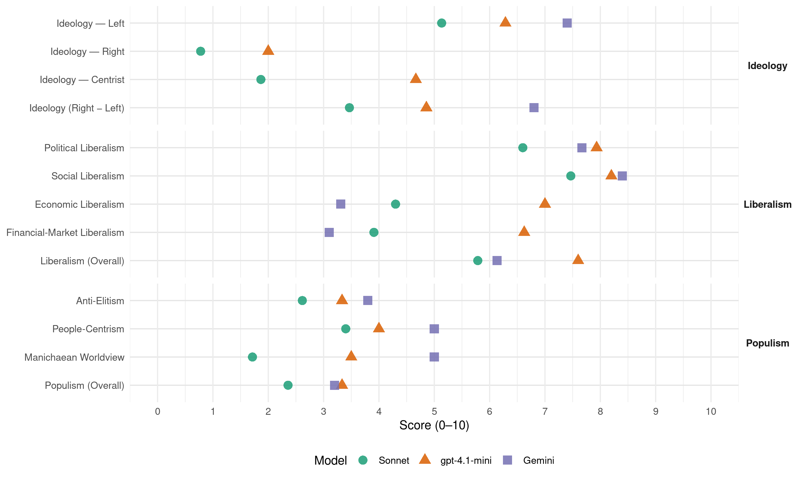

PS (Belgium, 2014)
manifesto_id 21322_201405
Get full text: This site shows derived annotations and short verbatim quotes only. The full manifesto text is © Manifesto Project / WZB — obtain it via manifesto-project.wzb.eu using the manifesto_id above.
Headline scores
| Dimension | Sonnet | gpt-4.1-mini | Gemini |
|---|---|---|---|
| Populism (Overall) | 2.4 | 3.3 | 3.2 |
| Anti-Elitism | 2.6 | 3.3 | 3.8 |
| People-Centrism | 3.4 | 4.0 | 5.0 |
| Manichaean Worldview | 1.7 | 3.5 | 5.0 |
| Ideology (Right − Left) | 3.5 | 4.9 | 6.8 |
| Liberalism (Overall) | 5.8 | 7.6 | 6.1 |
| Political Liberalism | 6.6 | 7.9 | 7.7 |
| Social Liberalism | 7.5 | 8.2 | 8.4 |
| Economic Liberalism | 4.3 | 7.0 | 3.3 |
| Financial-Market Liberalism | 3.9 | 6.6 | 3.1 |
Evidence per dimension
Economic Liberalism
Gemini · score 4.0 · mixed · chunk 1
“soutient donc les entreprises qui créent de l’emploi”
nantis et les privilégiés profitent des efforts de tous. Le PS soutient donc les entreprises qui créent de l’emploi, forment leurs travailleurs
Gemini · score 4.0 · mixed · chunk 2
“soutenir les employeurs qui créent de l’emploi”
Le PS soutiens les employeurs qui créent de l’emploi, forment leurs travailleurs et accordent attention à leur qualité de vie.
Gemini · score 4.0 · verified · chunk 3
“alternative au modèle individualiste et capitaliste”
par les entrepreneurs car il constitue une véritable alternative au modèle individualiste et capitaliste. Pour soutenir davantage le modèle coopératif, le PS
Gemini · score 4.0 · verified · chunk 4
“réglementer les initiatives privées et commerciales”
les initiatives d’écoles de devoir dans les quartiers ; réglementer les initiatives privées et commerciales proposant des prises en charge des devoirs. 1
Gemini · score 3.0 · verified · chunk 5
“encadrer les apports privés au sein”
mise à disposition d’outils et de matériels performants, etc.) ; encadrer les apports privés au sein de l’enseignement supérieur pour qu’ils s’inscrivent dans ses missions de service public.
Gemini · score 3.0 · verified · chunk 6
“contrôle du prix de la distribution de gaz”
transferts de compétences du contrôle du prix de la distribution de gaz et d’électricité, du prix des
Gemini · score 4.0 · verified · chunk 7
“la libre concurrence ne peut pas être le seul objectif”
investir dans les infrastructures : la libre concurrence ne peut pas être le seul objectif d’une politique ambitieuse de mobilité. L’Europe
Gemini · score 5.0 · verified · chunk 8
“soutenir la création d’entreprises et d’emplois”
développement durable nécessite un soutien à la création d’entreprises et d’emplois locaux au bénéfice des citoyens
Gemini · score 3.0 · verified · chunk 9
“refuse toute libéralisation du secteur”
captage, distribution, égouttage et épuration) pour garantir une eau de qualité au bénéfice des citoyens et des professionnels. Au niveau européen, le PS refuse toute libéralisation du secteur. Il est également important de maintenir une politique
Gemini · score 3.0 · verified · chunk 10
“face à la libéralisation des services”
belges, européennes et internationales face à la libéralisation des services. Le PS souhaite :soutenir sur le plan
Gemini · score 4.0 · verified · chunk 11
“soutenir la création par la mise en place de soutiens publics”
il convient donc, d’une part, de soutenir la création par la mise en place de soutiens publics (institutionnels et financiers) et, d’autre part, d’encourager
Gemini · score 3.0 · verified · chunk 12
“soustraire les services sociaux d’intérêt général à la loi du marché”
qualité et de l’accessibilité du service pour le citoyen, de l’évolution tarifaire et des conditions de travail des agents ; soustraire les services sociaux d’intérêt général à la loi du marché ; mieux informer
Gemini · score 2.0 · verified · chunk 13
“soustraire les services sociaux d’intérêt général à la loi du marché”
Le PS propose de : soustraire les services sociaux d’intérêt général à la loi du marché et en ce qui concerne
Gemini · score 2.0 · verified · chunk 14
“soustraire les services sociaux d’intérêt général à la loi du marché”
dans chaque Etat membre un revenu social minimum fondé sur des principes communs européens qui permettrait de vivre dans la dignité ; donner aux systèmes de protection sociale les moyens de jouer pleinement leur rôle de redistribution par les prestations et l’accès universel aux services sociaux et de santé de qualité, quels que soient les revenus ; créer une plateforme tripartite européenne afin d’évaluer comment le dialogue social et la négociation collective sont soutenus et mis en œuvre dans les Etats membres ; maintenir et renforcer la législation européenne sur la santé et la sécurité au travail mais aussi sur la protection des consommateurs, et revoir les objectifs et la philosophie même du « programme européen pour une législation affûtée et performante »(REFIT) pour empêcher un affaiblissement des droits des citoyens européens ; soustraire les services sociaux d’intérêt général à la loi du marché et en ce qui concerne l’application
Gemini · score 3.0 · verified · chunk 15
“taxation uniforme des sociétés multinationales”
lutter contre le blanchiment d’argent et contre la fraude fiscale, et à organiser une taxation uniforme des sociétés multinationales afin de lutter contre les montages financiers opaques
gpt-4.1-mini · score 7.0 · verified · chunk 1
“plan Marshall réinscrivant la Wallonie dans une dynamique de croissance”
pôles de compétitivité et plan Marshall réinscrivant la Wallonie dans une dynamique de croissance, activation de la garantie Jeunes et New Deal à Bruxelles… Clairement, la présence du PS au Gouvernement fait la différence.
gpt-4.1-mini · score 7.0 · verified · chunk 2
“favoriser la compétitivité des entreprises”
Selon le PS, les pouvoirs publics ont pour mission d’user des divers leviers pour favoriser la compétitivité des entreprises, en agissant sur le coût de l’énergie, la qualité de la main-d’œuvre, les aides à l’emploi, la fiscalité, le soutien à l’innovation ou encore la simplification administrative.
gpt-4.1-mini · score 7.0 · verified · chunk 3
“favoriser l’accès au crédit pour la valorisation de recherche par les invests régionaux”
…faciliter l’accès au crédit pour la valorisation de recherche par les invests régionaux ; soutenir le développement de stratégies visant à tester la capacité d’innovations potentielles…
gpt-4.1-mini · score 7.0 · verified · chunk 4
“réduction des inégalités sociales de réussite scolaire”
…l’élévation du niveau de performance des élèves et en priorité la réduction de la proportion de jeunes qui ne possèdent pas les compétences et connaissance des bases dans les disciplines clés (lecture, mathématiques, sciences) ; la réduction des inégalités sociales de réussite scolaire et, par ce biais, de la dualisation de l’école qui conduit à la fracture sociale…
gpt-4.1-mini · score 7.0 · verified · chunk 5
“encadrer les apports privés au sein de l’enseignement supérieur pour qu’ils s’inscrivent dans ses missions de service public”
solliciter davantage les acteurs économiques dans l’effort de formation de nos jeunes (offre de stages, mise à disposition d’outils et de matériels performants, etc.) ; encadrer les apports privés au sein de l’enseignement supérieur pour qu’ils s’inscrivent dans ses missions de service public.
gpt-4.1-mini · score 7.0 · verified · chunk 6
“favoriser l’implantation et le maintien des petits commerces de proximité”
Il est dès lors essentiel de favoriser et de valoriser leur participation active et d’encourager la solidarité intergénérationnelle. Il est important de continuer à rendre l’espace public plus sûr et plus convivial pour les aînés. La mobilité constitue, également, une condition nécessaire à la participation active de tous à la société et à la lutte contre toute forme d’isolement. La participation suppose l’accès à l’information afin de rester connecté à la vie de la société et de bénéficier de ses droits : culture, logement, aide, soins, pensions, etc. Cet accès peut être facilité par la création de points de contact de proximité. Dans ce cadre, le PS propose de : offrir un environnement agréable et propre, des espaces verts, des endroits où se reposer (bancs publics), des trottoirs accueillants pour les aînés, des passages pour piétons sécurisés, des bâtiments publics accessibles, des services privés et publics attentifs aux aînés ; favoriser l’implantation et le maintien des petits commerces de proximité dans les quartiers et les villages ; soutenir et diversifier l’offre de transports en commun tenant compte des besoins spécifiques des aînés (fréquence des dessertes, points d’arrêt, parcours, accessibilité des transports aux personnes à mobilité réduite, arrêt à la demande, abris de bus, marches plus accessibles dans les trains, entretien des escalators dans les métros…) et en faciliter l’accessibilité financière ; promouvoir les expériences participatives dans le cadre du projet « Ville, Commune, Région, amies des aînés » (notamment les conseils consultatifs des aînés) ; faire appel à l’expertise des aînés notamment pour animer et renforcer les structures existantes (extrascolaires, écoles de devoirs, maisons de quartier…) ; reconnaître les compétences et les talents des aînés pour leur donner l’occasion de partager leur savoir, leur histoire, leurs compétences ; garantir l’épanouissement socioculturel et sportif des aînés en favorisant l’accès matériel aux infrastructures et manifestations au niveau local ; développer au sein des communes, des « agences d’aînés actifs », avec une mission d’information, d’orientation et d’encadrement de l’activité des aînés dans le cadre du bénévolat ; développer les services d’écoute et d’information aux ainés (numéro vert Infoseniors Wallonie, « Respect Seniors »…) ; renforcer la lutte contre la fracture numérique par l’intensification des formations « Papy et Mamy Surfeurs » ; favoriser les initiatives intergénérationnelles en multipliant les espaces de rencontres et les projets intergénérationnels notamment au départ des associations de quartier ou de village, de préférence en collaboration avec les pouvoirs locaux.
gpt-4.1-mini · score 7.0 · verified · chunk 7
“marché, concurrence, entreprise, fiscalité, commerce, régulation, privatisation”
…mentionner marché, concurrence, entreprise, fiscalité, commerce, régulation, privatisation…
gpt-4.1-mini · score 7.0 · verified · chunk 8
“investir dans la réduction de la consommation d’énergie au bénéfice de tous”
…le PS propose de :investir dans la réduction de la consommation d’énergie au bénéfice de tous (voir chapitre énergie) ; améliorer les qualités sociales, sanitaires et environnementales des produits (voir chapitre politique des produits) ; encourager les produits locaux, de saison, issus d’une agriculture de qualité ou du commerce équitable, en partenariat avec le secteur agricole et la distribution, et promouvoir l’alimentation saine, en priorité à l’école ; soutenir les produits issus de filières répondant à des critères de durabilité (pierre, etc.) ; réduire la quantité de déchets produits par les citoyens et les entreprises en renforçant la prévention, en luttant contre les gaspillages et en favorisant la réparation des produits et leur recyclage (voir chapitre environnement) ; promouvoir une approche circulaire de l’économie – sur base de l’axe transversal wallon de politique industrielle, « NEXT », qui vise à faire émerger des solutions innovantes pour permettre de découpler la croissance économique de l’augmentation de la consommation des ressources en privilégiant, par exemple, l’utilisation conjointe de flux de matières et d’énergie entre entreprises, et la mutualisation de biens et de services ; encourager les investissements financiers socialement responsables qui contribuent au développement de l’économie réelle et durable, notamment en renforçant l’information et la transparence de ces investissements ; investir dans l’éducation et la formation pour que chacun ait accès à un emploi de qualité adapté à ses attentes et intégrer les enjeux de développement durable dans les formations (voir chapitre formation) ; aider les entrepreneurs et les travailleurs à intégrer les principes de développement durable dans leur modèle de fonctionnement (innovation, investissements, achats et gestion dans le respect de normes sociales et environnementales, et aussi renforcement d’un dialogue social constant) ; obliger les grandes entreprises à présenter annuellement un rapport relatif à leur responsabilité sociétale, incluant des informations et indicateurs comparables dans le temps, basés sur des standards internationaux, qui permettent la vérification du respect des normes sociales et environnementales reconnues internationalement, en ce compris, dans la mesure du possible, pour leur chaîne d’approvisionnement ; favoriser le respect des Droits de l’Homme et des règles de l’Organisation internationale du travail par les entreprises belges en promouvant le label social.
gpt-4.1-mini · score 7.0 · verified · chunk 9
“promouvoir une approche circulaire de l’économie, sur base du programme wallon « NEXT »”
promouvoir une approche circulaire de l’économie, sur base du programme wallon « NEXT », en vue d’aider les entreprises à réduire leur consommation d’énergie en privilégiant par exemple l’utilisation conjointe de flux de matières et d’énergie entre elles.
gpt-4.1-mini · score 7.0 · verified · chunk 10
“favoriser la mixité et la diversité au sein du personnel des administrations publiques”
En matière de discrimination sur le marché du travail, le PS propose de :rendre périodique le système de monitoring du marché de l’emploi qui permettrait de lutter contre les discriminations à l’embauche et en assurer un suivi dans le cadre de la concertation sociale ; renforcer les politiques régionales de promotion de la diversité dans les entreprises (sensibilisation, formation des DRH à l’interculturalité, aide à la décision en matière de diversité culturelle et confessionnelle…) ; valoriser la mixité et la diversité au sein du personnel des administrations publiques ; créer un « label citoyenneté » pour les entreprises qui engagent des personnes d’origine culturelle étrangère et de ce fait encourager le multiculturalisme au travail ; évaluer les possibilités de favoriser l’engagement de demandeurs d’emploi émanant des quartiers à fort taux de chômage au sein des services publics et du secteur privé ; encourager la présence des personnes issues de l’immigration dans les réseaux d’organisation interprofessionnelle ; soutenir les mesures qui favorisent l’objectivation des conditions de recrutement (CV de compétences…).
gpt-4.1-mini · score 7.0 · verified · chunk 11
“offrir la faculté à Wallimage et Start d’octroyer des prêts à courts termes et à taux réduits à des projets culturels”
Pour optimaliser le financement de la culture, le PS propose de : affecter prioritairement les moyens nouveaux éventuels à l’éducation artistique et culturelle, à la création artistique et à la participation citoyenne ; offrir la faculté à Wallimage et Start d’octroyer des prêts à courts termes et à taux réduits à des projets culturels ; constituer un fonds culturel interdisciplinaire pour les nouvelles formes de création, alimenté par une partie des moyens issus des droits de la copie privée ; encadrer et promouvoir le financement participative (crowfunding) culturel; apporter un soutien financier public aux plateformes de financement participatif valorisant les projets culturels belges (arts, information, citoyenneté, etc.) ; mettre en œuvre une réforme du système du tax shelter afin de recentrer le système vers un soutien aux producteurs et réalisateurs belges ; réfléchir à l’élargissement du tax shelter, éventuellement adapté, à d’autres secteurs culturels compatibles avec ce système.
gpt-4.1-mini · score 7.0 · verified · chunk 12
“soutenir l’économie réelle”
Pour le PS, la fiscalité doit être au service d’une politique ciblée sur l’emploi, l’innovation, la formation et l’investissement productif durable, avec une attention particulière portée sur les PME.
gpt-4.1-mini · score 7.0 · verified · chunk 13
“simplifier et assurer la lisibilité des taxes locales”
simplifier et assurer la lisibilité des taxes locales en supprimant les moins rentables, les moins pertinentes et celles qui requièrent la charge administrative la plus importante, tout en assurant un niveau de recettes équivalent ; renforcer le rôle d’appui et de conseil de l’administration régionale en matière de gestion financière (gestion de la dette, politique de placements financiers, etc.) ;
gpt-4.1-mini · score 7.0 · verified · chunk 14
“renforcer la politique de cohésion européenne”
renforcer la politique de cohésion européenne par les fonds structurels et concentrer les aides sur les régions en transition économique, ou qui connaissent d’importants problèmes en matière d’emploi, notamment sur les grands pôles urbains en déclin industriel afin d’enrayer ce déclin ; veiller à l’accélération des processus de paiement pour les opérateurs de projets qui bénéficient de financements européens ; faire contribuer le secteur financier à la relance notamment au travers d’un engagement fort à soutenir l’économie réelle (crédits à l’investissement, prêts aux entrepreneurs, etc.) ; encourager la BCE à financer les institutions financières publiques en vue de financer l’économie réelle ou les projets d’intérêts publics ; faire jouer un rôle plus important à la Banque européenne d’investissement (BEI) dans le financement de l’économie réelle ; renforcer le développement de l’espace européen de la recherche pour permettre un redéploiement économique à l’échelle européenne, entre autres dans le secteur de l’énergie et permettre à davantage de chercheurs, de centres de recherche et d’entreprises d’accéder aux appels à projets européens ; faire de l’Europe le champion de l’efficacité énergétique par un investissement massif dans la réduction de la consommation d’énergie - en aidant ceux qui en ont le plus besoin -, dans la modernisation écologique des entreprises, et par le cofinancement européen des transports publics, des infrastructures collectives et la rénovation des logements sociaux ; élaborer un nouveau traité de l’énergie mettant en place une véritable« Communauté européenne de l’énergie » portant sur une meilleure coordination des politiques nationales pour assurer l’accès de tous à l’énergie, maîtriser les prix et garantir la sécurité d’approvisionnement, mais aussi sur des programmes de cohésion territoriale, le soutien à la recherche sur les technologies et à la formation… ; faciliter l’accès à tout type de financement européen pour les PME, les institutions parapubliques et les coopératives, tels que les fonds de la Banque européenne d’investissement (BEI), le Fonds européen d’investissements, les programmes COSME ou Horizon 2020 ; rendre plus contraignant l’objectif des 3% du PIB d’investissement dans la recherche et le développement, la recherche appliquée et l’innovation ; renforcer au niveau européen des pôles d’excellence en matière de recherche et de la coopération interuniversitaire ; encourager la mobilité des chercheurs à l’intérieur de l’UE, en mettant en place un système de bourses Erasmus spécifique pour chercheurs et enseignants de l’enseignement supérieur et de l’enseignement technique et professionnel.
gpt-4.1-mini · score 7.0 · verified · chunk 15
“commerce mondial plus juste”
assurer un commerce mondial plus juste (voir point sur le commerce mondial) ; annuler les dettes bilatérales et multilatérales, à commencer par les dettes odieuses illégitimes des pays pauvres très endettés (PPTE), et plus largement celles des pays les moins avancés (PMA) et, pour cela, mener des audits des créances belges vis-à-vis de ces pays ; défendre des politiques cohérentes avec le droit à l’alimentation (voir aussi le point « Lutter contre les inégalités dans le monde »).
Sonnet · score 4.0 · verified · chunk 1
“voies néolibérales soutenues par la Commission européenne”
la Belgique n’a pas suivi aveuglément les voies néolibérales soutenues par la Commission européenne qui prônait une austérité à tous crins
Sonnet · score 5.0 · mixed · chunk 2
“compétitivité des entreprises”
les pouvoirs publics ont pour mission d’user des divers leviers pour favoriser la compétitivité des entreprises, en agissant sur le coût de l’énergie
Sonnet · score 5.0 · mixed · chunk 3
“perspective d’une concurrence loyale”
dumping environnemental et social qui détruit la perspective d’une concurrence loyale, dégrade les conditions de travail
Sonnet · score 4.0 · verified · chunk 4
“besoins du marché du travail”
des besoins et des opportunités du marché de l’emploi, en concertation avec les acteurs du qualifiant et les partenaires sociaux
Sonnet · score 5.0 · verified · chunk 5
“encadrer les apports privés au sein de l’enseignement supérieur”
encadrer les apports privés au sein de l’enseignement supérieur pour qu’ils s’inscrivent dans ses missions de service public
Sonnet · score 4.0 · verified · chunk 6
“mécanismes de contrôle des prix”
Les mécanismes de contrôle des prix doivent également jouer pleinement leur rôle afin de mieux lutter contre les marges excessives
Sonnet · score 4.0 · mixed · chunk 7
“régulation du secteur, aujourd’hui abandonné au « tout au marché »”
il est nécessaire de mettre en place une véritable régulation du secteur, aujourd’hui abandonné au « tout au marché », et de renforcer les droits
Sonnet · score 5.0 · verified · chunk 8
“soutien à la création d’entreprises et d’emplois”
développement durable nécessite un soutien à la création d’entreprises et d’emplois locaux au bénéfice des citoyens
Sonnet · score 5.0 · mixed · chunk 9
“marché européen libéralisé doit être revu de fond en comble”
Enfin, le marché européen libéralisé doit être revu de fond en comble. L’Europe ne peut pas se contenter d’un marché inopérant
Sonnet · score 4.0 · verified · chunk 10
“défendre le principe d’exception « non-marchande »”
Le PS veut défendre le principe d’exception « non-marchande » dans les négociations intra-belges, européennes et internationales face à la libéralisation des services
Sonnet · score 5.0 · verified · chunk 11
“financement participatif (crowdfunding) dans lesquelles le secteur public”
renforcer la mise en place des soutiens aux ICC par des plateformes de financement participatif (crowdfunding) dans lesquelles le secteur public peut intervenir financièrement en complément des différents investissements privés
Sonnet · score 4.0 · verified · chunk 12
“libéralisation des services publics”
le PS est résolument opposé à la libéralisation des services publics que proposent actuellement les instances européennes
Sonnet · score 4.0 · verified · chunk 13
“La libéralisation du transport de marchandises par rail”
La libéralisation du transport de marchandises par rail, conjuguée à la crise économique, a eu de lourdes conséquences sur les activités « fret » du groupe SNCB
Sonnet · score 4.0 · verified · chunk 14
“refuser les politiques d’austérité imposées par les conservateurs”
refuser les politiques d’austérité imposées par les conservateurs et défendre un rythme de retour à l’équilibre des finances publiques qui permette de ne pas tuer l’activité économique
Sonnet · score 4.0 · mixed · chunk 15
“assurer un commerce mondial plus juste”
annuler les dettes bilatérales et multilatérales, à commencer par les dettes odieuses illégitimes des pays pauvres très endettés (PPTE), et plus largement celles des pays les moins avancés (PMA) et, pour cela, mener des audits des créances belges vis-à-vis de ces pays ; défendre des politiques cohérentes avec le droit à l’alimentation (voir aussi le point « Lutter contre les inégalités dans le monde »)
Financial-Market Liberalism
Gemini · score 3.0 · verified · chunk 1
“réforme drastique du secteur bancaire”
plafonnement des salaires des patrons des entreprises publiques, maîtrise des prix de l’électricité, meilleure contribution du capital, réforme drastique du secteur bancaire, augmentation des pensions
Gemini · score 3.0 · verified · chunk 2
“l’interdiction de la spéculation pour compte propre”
le PS a obtenu une profonde réforme bancaire, unique en Europe : l’interdiction de la spéculation pour compte propre, l’encadrement de toutes les activités
Gemini · score 3.0 · verified · chunk 3
“médiateur crédit”
CED)» et en assurer une meilleure visibilité ; pérenniser l’outil de conseil et d’accompagnement « médiateur crédit » ; poursuivre la politique d’interim management
Gemini · score 3.0 · verified · chunk 6
“resserrer l’encadrement des prêteurs afin d’éviter”
Il faut dès lors resserrer l’encadrement des prêteurs afin d’éviter que le crédit à la consommation ne creuse
Gemini · score 3.0 · verified · chunk 7
“resserrer l’encadrement des prêteurs afin d’éviter que le crédit”
préoccupation. Il faut dès lors resserrer l’encadrement des prêteurs afin d’éviter que le crédit à la consommation ne creuse l’endettement de
Gemini · score 6.0 · verified · chunk 8
“encourager les investissements financiers socialement responsables”
mutualisation de biens et de services ; encourager les investissements financiers socialement responsables qui contribuent au développement de l’économie
Gemini · score 4.0 · verified · chunk 11
“octroyer des prêts à courts termes et à taux réduits”
Pour optimaliser le financement de la culture, le PS propose de : affecter prioritairement les moyens nouveaux éventuels à l’éducation artistique et culturelle, à la création artistique et à la participation citoyenne ; offrir la faculté à Wallimage et Start d’octroyer des prêts à courts termes et à taux réduits à des projets culturels
Gemini · score 2.0 · verified · chunk 12
“instaurer une taxe sur les transactions financières”
connaissance de tous les revenus ce qui permettra de mieux appréhender la progressivité/régressivité de notre système fiscal ; poursuivre le combat pour instaurer une taxe sur les transactions financières (TTF) destinée à lutter
Gemini · score 2.0 · verified · chunk 14
“séparer les activités de négociation des activités de dépôt et interdire la spéculation”
accélérer le travail entrepris pour mettre fin à la culture du risque excessif au sein de certaines banques et renforcer la stabilité des banques européennes ; séparer les activités de négociation des activités de dépôt et interdire la spéculation pour compte propre afin que les activités à risque ne mettent plus en danger
Gemini · score 2.0 · verified · chunk 15
“taxe mondiale sur les transactions financières”
contribuerait à instaurer progressivement une taxe mondiale sur les transactions financières internationales, à lutter contre le blanchiment d’argent
gpt-4.1-mini · score 7.0 · verified · chunk 1
“réforme drastique du secteur bancaire”
réduction du prix de plus de 2.500 médicaments et des frais d’hôpitaux, plafonnement des salaires des patrons des entreprises publiques, maîtrise des prix de l’électricité, meilleure contribution du capital, réforme drastique du secteur bancaire, augmentation des pensions les plus basses, suppression du minerval pour les étudiants boursiers dans l’enseignement supérieur,
gpt-4.1-mini · score 7.0 · verified · chunk 2
“réforme bancaire la plus avancée d’Europe”
Le PS a obtenu une profonde réforme bancaire, unique en Europe : l’interdiction de la spéculation pour compte propre, l’encadrement de toutes les activités sur les produits financiers pour les clients, des rémunérations plus justes ainsi que l’interdiction des manipulations sur le cours des denrées alimentaires.
gpt-4.1-mini · score 6.0 · verified · chunk 3
“examiner la possibilité d’étendre le régime du Tax shelter aux PME innovantes”
…examiner la possibilité d’étendre le régime du Tax shelter aux PME innovantes en renforçant le lien direct entre les investisseurs potentiels et l’entreprise innovante…
gpt-4.1-mini · score 7.0 · verified · chunk 7
“finance, banque, capital, crédit, investissement, marché, monétaire, taux d’intérêt”
…mentionner finance, banque, capital, crédit, investissement, marché, monétaire, taux d’intérêt…
gpt-4.1-mini · score 6.0 · verified · chunk 11
“mettre en œuvre une réforme du système du tax shelter afin de recentrer le système vers un soutien aux producteurs et réalisateurs belges”
Pour optimaliser le financement de la culture, le PS propose de : affecter prioritairement les moyens nouveaux éventuels à l’éducation artistique et culturelle, à la création artistique et à la participation citoyenne ; offrir la faculté à Wallimage et Start d’octroyer des prêts à courts termes et à taux réduits à des projets culturels ; constituer un fonds culturel interdisciplinaire pour les nouvelles formes de création, alimenté par une partie des moyens issus des droits de la copie privée ; encadrer et promouvoir le financement participative (crowfunding) culturel; apporter un soutien financier public aux plateformes de financement participatif valorisant les projets culturels belges (arts, information, citoyenneté, etc.) ; mettre en œuvre une réforme du système du tax shelter afin de recentrer le système vers un soutien aux producteurs et réalisateurs belges ; réfléchir à l’élargissement du tax shelter, éventuellement adapté, à d’autres secteurs culturels compatibles avec ce système.
gpt-4.1-mini · score 7.0 · verified · chunk 12
“lutte contre la fraude fiscale”
Le PS propose de : augmenter les effectifs et améliorer les moyens techniques de l’Inspection Spéciale des Impôts, et des services de lutte contre la fraude en général, afin qu’ils puissent disposer des moyens nécessaires pour assurer toutes leurs missions ; … renforcer la lutte contre les structures offshores mises en place pour faciliter des montages fiscaux frauduleux ; … poursuivre les travaux pour lutter contre la planification fiscale agressive des multinationales et des paradis fiscaux ; … obtenir un impôt minimum des sociétés pour les multinationales.
gpt-4.1-mini · score 7.0 · verified · chunk 14
“instaurer une taxe sur les transactions financières”
poursuivre le combat pour instaurer une taxe sur les transactions financières (TTF) destinée à lutter contre la spéculation, dont le champ d’application couvre les transactions sur l’ensemble des actions, obligations, opérations de change et produits dérivés de toute sorte, intégrant toutes les institutions financières qui interviennent dans une opération en rapport avec un titre émis dans un Etat membre et non limitée aux institutions situées sur le territoire ; exiger l’instauration d’une taxe progressive sur les revenus du capital (et/ou un impôt sur la fortune articulé autour d’un socle fiscal commun) au niveau européen ainsi que la mise en place d’un cadastre des fortunes européen ; exiger l’instauration au niveau européen d’un impôt des sociétés minimum et une harmonisation des bases imposables pour stopper la concurrence fiscale entre Etats, qui profite essentiellement aux groupes transnationaux ; limiter, aux niveaux belge et européen, la déduction d’impôt étranger aux seuls impôts qui ont été effectivement payés à l’étranger lorsque les bénéficiaires sont des groupes multinationaux ; lutter plus efficacement contre les paradis fiscaux à l’intérieur de la zone euro et surveiller les mouvements de capitaux vers les places financières off-shore (paradis fiscaux) en recourant au marquage des capitaux par l’utilisation de la TTF ; poursuivre les travaux pour lutter contre la planification fiscale agressive des multinationales et des paradis fiscaux ; établir un code de conduite sur les pratiques fiscales dommageables et impulser une action déterminée au niveau de la Belgique afin que le plan d’action de l’OCDE relatif à l’érosion de la base d’imposition et transfert de bénéfices (dit plan BEPS) vers l’étranger aboutisse et assure une juste contribution fiscale des entreprises multinationales ; s’engager activement dans la mise en place d’une plateforme multilatérale visant à étendre l’application de la directive épargne à tous les instruments et acteurs financiers et à prévoir l’exclusion du marché européen pour les entités non participantes à l’échange automatique d’informations sur les avoirs déposés par les citoyens de l’Union européenne dans des banques d’autres Etats membres.
gpt-4.1-mini · score 6.0 · verified · chunk 15
“taxe mondiale sur les transactions financières internationales”
développer une fiscalité internationale à travers la mise en œuvre d’une organisation fiscale internationale qui contribuerait à instaurer progressivement une taxe mondiale sur les transactions financières internationales, à lutter contre le blanchiment d’argent et contre la fraude fiscale, et à organiser une taxation uniforme des sociétés multinationales afin de lutter contre les montages financiers opaques et les délocalisations pour raisons fiscales ; garantir dans tout accord international de commerce et d’investissement un véritable traitement spécial et différencié
Sonnet · score 3.0 · verified · chunk 1
“réforme drastique du secteur bancaire”
plafonnement des salaires des patrons des entreprises publiques, maîtrise des prix de l’électricité, meilleure contribution du capital, réforme drastique du secteur bancaire
Sonnet · score 5.0 · mixed · chunk 2
“réforme bancaire la plus avancée d’Europe”
si l’action du PS a permis d’obtenir la réforme bancaire la plus avancée d’Europe, qui rend indubitablement le système financier et l’économie belges moins vulnérables
Sonnet · score 5.0 · verified · chunk 3
“accès au crédit pour la valorisation”
faciliter l’accès au crédit pour la valorisation de recherche par les invests régionaux
Sonnet · score 5.0 · verified · chunk 5
“Banque européenne d’investissement”
rechercher un financement spécifique avec la Banque européenne d’investissement ; encourager l’insertion de clauses sociales
Sonnet · score 4.0 · verified · chunk 6
“accès aux services financiers de base”
promouvoir une réelle inclusion financière, permettant à chacun, d’avoir accès aux services financiers de base, et adaptés aux besoins de la vie sociale
Sonnet · score 5.0 · mixed · chunk 7
“transparence et la lisibilité des produits financiers”
renforcer les contrôles afin de veiller au respect et à la mise en œuvre effective de la directive sur les marchés d’instruments financiers (MIFID) afin d’améliorer la transparence et la lisibilité des produits financiers
Sonnet · score 4.0 · verified · chunk 8
“taxe sur les transactions financières”
mettre en œuvre une taxe sur les transactions financières dont une partie servira à financer la politique internationale d’aide aux pays en développement
Sonnet · score 4.0 · verified · chunk 9
“gel temporaire des prix pourra aussi être imposé”
un gel temporaire des prix pourra aussi être imposé si nécessaire (pour la ou les composantes concernées)
Sonnet · score 5.0 · verified · chunk 11
“prêts à courts termes et à taux réduits”
offrir la faculté à Wallimage et Start d’octroyer des prêts à courts termes et à taux réduits à des projets culturels
Sonnet · score 3.0 · verified · chunk 12
“taxe sur les transactions financières”
poursuivre le combat pour instaurer une taxe sur les transactions financières (TTF) destinée à lutter contre la spéculation
Sonnet · score 5.0 · verified · chunk 13
“mécanismes garantissant la transparence des flux financiers”
mettre en place des mécanismes garantissant la transparence des flux financiers et permettant de maîtriser puis de réduire l’endettement afin d’assurer la pérennité des deux entreprises publiques
Sonnet · score 3.0 · verified · chunk 14
“taxe sur les transactions financières”
poursuivre le combat pour instaurer une taxe sur les transactions financières (TTF) destinée à lutter contre la spéculation, dont le champ d’application couvre les transactions sur l’ensemble des actions
Sonnet · score 2.0 · verified · chunk 15
“taxe sur les transactions financières”
promouvoir des sources novatrices de financement du développement notamment en instaurant une taxe sur les transactions financières dont une partie servirait à financer
Political Liberalism
Gemini · score 8.0 · verified · chunk 1
“Dans notre démocratie parlementaire et proportionnelle”
résultat des élections. Dans notre démocratie parlementaire et proportionnelle, la logique politique est simple
Gemini · score 8.0 · verified · chunk 2
“le fonctionnement démocratique de notre société”
Cette situation inacceptable est incompatible avec le fonctionnement démocratique de notre société, comme au plan de l’égalité des chances.
Gemini · score 7.0 · verified · chunk 3
“l’autorité du service public”
la gestion de l’école publique dans la logique de l’autorité du service public. Les acteurs, chacun en fonction de leur niveau d’intervention
Gemini · score 8.0 · verified · chunk 4
“plus juste, plus démocratique et émancipatrice”
revue pour contribuer davantage au développement d’une école plus juste, plus démocratique et émancipatrice pour tous. Les objectifs et contenus de la
Gemini · score 7.0 · verified · chunk 5
“garantir le financement des services transférés”
croissance annuelle du budget des soins de santé pour la législature 2014-2019 ; garantir le financement des services transférés aux entités fédérées afin de leur permettre de mener à bien toutes leurs missions.
Gemini · score 8.0 · verified · chunk 6
“droits des personnes en situation de handicap”
la protection et la promotion des droits des personnes en situation de handicap se doivent d’être
Gemini · score 7.0 · verified · chunk 7
“au détriment du libre choix des internautes, de la liberté d’expression”
risquant de créer un internet à« deux vitesses » au détriment du libre choix des internautes, de la liberté d’expression, de l’innovation et de la diversité culturelle.
Gemini · score 7.0 · verified · chunk 8
“renforcer les institutions chargées de l’élaboration”
épanouissement culturel) ; renforcer les institutions chargées de l’élaboration et de l’évaluation des plans et rapports
Gemini · score 8.0 · verified · chunk 9
“droits fondamentaux inscrit dans la Constitution”
L’accès au logement et le droit de mener une vie conforme à la dignité humaine sont des droits fondamentaux inscrit dans la Constitution. Face à la pénurie de logements
Gemini · score 8.0 · verified · chunk 10
“droits fondamentaux inscrit dans la Constitution”
conforme à la dignité humaine sont des droits fondamentaux inscrit dans la Constitution. Face à la pénurie de logements mais aussi
Gemini · score 7.0 · verified · chunk 11
“respect des principes démocratiques”
rencontrer plusieurs standards comme le respect de la diversité et des principes démocratiques. Protéger les utilisateurs contre certains dangers
Gemini · score 8.0 · verified · chunk 12
“notre attachement indissoluble aux valeurs démocratiques”
sentiment antipolitique sans cesse croissant, c’est l’occasion de réaffirmer notre attachement indissoluble aux valeurs démocratiques. Pour le PS, la démocratie
Gemini · score 8.0 · verified · chunk 13
“respect de leur indépendance”
le statut des magistrats, le respect de leur indépendance, leur formation continue
Gemini · score 8.0 · verified · chunk 14
“L’indépendance des magistrats est un des piliers de notre société démocratique”
La réforme du paysage judiciaire entraîne un bouleversement sur le terrain. L’indépendance des magistrats est un des piliers de notre société démocratique. Les réformes entreprises
Gemini · score 8.0 · verified · chunk 15
“respect des droits humains et de la démocratie”
2. PR O M O UV O I R D E S PO L I T I Q UE S E X T E R I E UR E S C O H E R E N T E S E T C O M P L E M E N T A I R E S Le respect des droits humains et de la démocratie sont et doivent rester la base de notre politique extérieure.
gpt-4.1-mini · score 8.0 · verified · chunk 1
“notre démocratie parlementaire et proportionnelle”
Dans notre démocratie parlementaire et proportionnelle, la logique politique est simple : plus le PS sera fort, plus les mesures reprises dans son programme trouveront à s’appliquer.
gpt-4.1-mini · score 8.0 · verified · chunk 2
“fonctionnement démocratique de notre société”
Cette situation inacceptable est incompatible avec le fonctionnement démocratique de notre société, comme au plan de l’égalité des chances.
gpt-4.1-mini · score 8.0 · verified · chunk 3
“la loi visant à lutter contre l’écart salarial notamment par le biais de rapports rendus publics”
…renforcer le mécanisme de contrôle de la loi visant à lutter contre l’écart salarial notamment par le biais de rapports rendus publics par l’Institut pour l’égalité des femmes et des hommes et d’avis du Conseil de l’égalité des femmes et des hommes…
gpt-4.1-mini · score 8.0 · verified · chunk 4
“évaluations externes, la mise en œuvre d’un accompagnement”
…pilotage par objectifs avec le développement des évaluations externes, la mise en œuvre d’un accompagnement lorsque les objectifs ne sont pas atteints ou encore l’organisation de l’offre en bassins scolaires. Les écoles et les équipes éducatives doivent pouvoir opérer les adaptations nécessaires pour s’assurer des meilleures conditions d’apprentissage…
gpt-4.1-mini · score 8.0 · verified · chunk 5
“maintenir la gratuité des études en promotion sociale pour tous les allocataires sociaux”
Le PS veillera à:maintenir la gratuité des études en promotion sociale pour tous les allocataires sociaux ; instaurer des bourses d’études pour les étudiants de promotion sociale.
gpt-4.1-mini · score 7.0 · verified · chunk 6
“respect strict des règles de sécurité au niveau informatique, de la confidentialité des données, du secret médical”
Pour le PS, il est primordial de réaliser les nouveaux projets technologiques avec le consentement éclairé du patient, dans le respect strict des règles de sécurité au niveau informatique, de la confidentialité des données, du secret médical et bien entendu des règles en matière de protection de la vie privée.
gpt-4.1-mini · score 7.0 · verified · chunk 7
“la démocratie, les droits, les élections, les tribunaux, les médias”
…mentionner démocratie, droits, élections, tribunaux, médias, gouvernement, parlement…
gpt-4.1-mini · score 8.0 · verified · chunk 8
“garantir un système de contrôle technique régulé, efficace et de proximité”
…un apprentissage de qualité ; garantir un système de contrôle technique régulé, efficace et de proximité pour permettre à chacun de disposer d’un véhicule en bon état et assurer une mutualisation des coûts entre centres de contrôle techniques et centres d’examen pour éviter que les citoyens ne payent plus cher dans les zones peu peuplées.
gpt-4.1-mini · score 8.0 · verified · chunk 9
“garantir l’accès aux soins de santé quelle que soit la situation financière”
En ce qui concerne l’accès à la santé, le PS propose de (voir également chapitre Santé) :garantir l’accès aux soins de santé quelle que soit la situation financière, notamment en sensibilisant les médecins à la pratique d’une médecine sociale de proximité en centre PMS ou au sein des CPAS, en renforçant le financement des soins de première ligne dispensés en maison médicale et l’utilisation du dossier médical global, ou en automatisant le mécanisme du tiers payant pour les patients précarisés ;
gpt-4.1-mini · score 9.0 · verified · chunk 10
“l’accès au logement et le droit de mener une vie conforme à la dignité humaine sont des droits fondamentaux inscrit dans la Constitution”
de droits fondamentaux. Il développe, par un travail à long terme, des initiatives en matière d’insertion socioprofessionnelle, d’accès à un logement décent, d’accès à la santé et au traitement des assuétudes et encourage le citoyen à jouer un rôle actif dans son cadre de vie et dans le retissage de liens sociaux. Dans ce cadre, le PS propose de :continuer à lutter pour l’accès de tous les citoyens aux droits fondamentaux et pour une meilleure cohésion sociale, en alliant aux politiques spécifiques des dispositifs plus globaux encourageant le« mieux vivre ensemble » (intergénérationnel, interculturel, précaires/non précaires…) ; soutenir les communes dans la mise en œuvre de leur plan de cohésion sociale dans le cadre de la deuxième programmation du PCS 2014-2019 ; soutenir les métiers liés aux plans de cohésion sociale et encourager leur prise en compte dans la fonction publique communale ; encourager la mise en réseau et le partenariat entre les communes, les associations et l’ensemble des services impliqués dans des actions communales et supra-communales de cohésion sociale afin de travailler mieux, de manière plus efficiente, en mutualisant les moyens vers le même objectif et partageant les pratiques de chacun. 5. APPR E H E N D E R L ’H A B I T A T PE R M A N E N T D A N S L E S E Q UI PE M E N T S T O UR I S T I Q UE S L’accès au logement et le droit de mener une vie conforme à la dignité humaine sont des droits fondamentaux inscrit dans la Constitution. Face à la pénurie de logements mais aussi au coût du logement, de nombreuses familles ont choisi de s’installer de manière permanente dans des zones touristiques.
gpt-4.1-mini · score 8.0 · verified · chunk 11
“garantir les moyens financiers pour lui permettre de continuer à développer les missions du service public”
pérenniser les valeurs de la RTBF, lui garantir les moyens financiers pour lui permettre de continuer à développer les missions du service public ainsi que pour préserver l’emploi, la qualité de l’information et la diversité des programmes proposés aux citoyens ; réaffirmer et garantir la faculté de la RTBF de développer ses activités et d’innover sur tous les types de support, c’est-à-dire sur le plus grand nombre de plateformes de distribution de contenus, en ce compris sur des services en ligne innovants, afin de rencontrer sa mission de service public garantissant l’accès du plus grand nombre à une offre qualitative de programmes diversifiés de service public, en conservant le mécanisme inscrit dans le contrat de gestion prévoyant l’alimentation par la RTBF d’un fonds de soutien aux médias d’information les recettes nettes de publicité sous forme de displays autour des contenus écrits de son site d’information, qui dépassent un montant de 600.000 euros par an (indexés) ; plaider pour faire reconnaitre cette faculté au niveau européen pour l’ensemble des services audiovisuels publics ; soutenir au niveau européen la capacité des Etats à définir leur politique audiovisuelle publique et soutenir financièrement le développement de leur service audiovisuel public afin de leur assurer une pleine indépendance et de garantir la diversité culturelle, la qualité et la diversité de l’information dans un système équilibré public/privé ; établir des règles européennes qui garantissent un accès direct au service public : o en facilitant l’accès du citoyen au service public, par exemple en prenant les dispositions nécessaires pour que le service public bénéficie d’une proéminence adéquate sur les guides de programmes, devenant ou restant ainsi « faciles à trouver » quel que soit le support ; o en garantissant l’accès au service public quel que soit le support de diffusion (télévision, ordinateur, smartphones…) ; ceci par exemple dans le but de favoriser l’accès gratuit à la radio par son téléphone portable alors qu’à l’heure actuelle de nombreux appareils obligent l’auditeur à passer par une technologie payante telle que le 3G ; o en garantissant que les ressources en fréquences « libérées » par la numérisation (dividende numérique) ne soient pas toutes affectées en priorité à des applications télécoms mais aux services publics audiovisuels afin de leur permettre de conserver les moyens techniques (bande passante, fréquences hertziennes…) indispensables à leur développement ; garantir que les distributeurs de services de médias audiovisuels (Belgacom, VOO, SNOW…) distribuent intégralement les services des radiodiffuseurs publics (chaines de télévision, de radio, offres de télévision de rattrapage) sans coupure, sans modification, ni ajout, afin de ne pas modifier les contenus proposés et de ne pas priver les radiodiffuseurs de ressources financières pour la production de nouveaux contenus ; examiner la possibilité de prévoir que tout distributeur de services de médias audiovisuels qui propose des fonctionnalités de vision différée des programmes (telles que pause, catch-up, VOD ou J-36 h) obtienne au préalable l’autorisation de l’éditeur concerné et le rémunère pour ces services afin de soutenir la production audiovisuelle en orientant les moyens obtenus par ces éditeurs vers la production audiovisuelle en FWB ; garantir le financement des télévisions locales et mener une réflexion globale sur leur développement face aux nouveaux modes de consommation des médias afin d’assurer leur pérennité et leur évolution ; proposer la contribution des câblodistributeurs bruxellois au financement des missions d’intérêt général, notamment les télés locales de la région, à l’instar de ce qui se fait en région de langue française ; pérenniser la dotation de TV5 Monde au nom de la défense, de la promotion de la langue française et des cultures francophones ; renforcer les collaborations de TV5 Monde avec les partenaires audiovisuels francophones.
gpt-4.1-mini · score 8.0 · verified · chunk 12
“attachement à l’obligation de vote”
Parce que le vote constitue un des ciments essentiels de notre démocratie, le PS rappelle son attachement à l’obligation de vote.
gpt-4.1-mini · score 8.0 · verified · chunk 13
“le respect des droits des usagers”
instaurer une charte du citoyen-usager afin d’assurer un respect des droits des usagers et leur meilleure information ; améliorer la lisibilité et la pédagogie des réglementations, des procédures et des décisions administratives par une meilleure communication, avec une attention particulière accordée aux couches de la population les plus fragilisées et aux personnes qui ne disposent pas d’un accès aux nouvelles technologies ;
gpt-4.1-mini · score 8.0 · verified · chunk 14
“renforcer le rôle du Parlement européen”
renforcer le rôle du Parlement européen, seule institution européenne élue au suffrage universel, notamment en lui octroyant un droit d’initiative législative, en étendant la co-décision, en lui octroyant un droit de contrôle du travail de la Commission pour toutes ses activités ; renforcer le rôle du Comité des Régions dans le processus de décisions européennes de manière à apporter à celles-ci une dimension pragmatique que les collectivités locales et régionales sont en mesure d’imprimer tenant compte de la proximité dont elles disposent vis-à-vis des populations concernées par ces mêmes décisions ; renforcer le rôle des parlements nationaux pour peser davantage sur le Conseil, notamment en matière de supervision économique et budgétaire ; désigner, au sein de chaque parti européen, un candidat à la Présidence de la Commission et soumettre son élection au vote du Parlement européen afin de renforcer sa légitimité vis-à-vis de celui-ci, avec pour objectif à terme l’avènement d’une réelle démocratie parlementaire européenne.
gpt-4.1-mini · score 8.0 · verified · chunk 15
“le respect des droits humains et de la démocratie”
2. PR O M O UV O I R D E S PO L I T I Q UE S E X T E R I E UR E S C O H E R E N T E S E T C O M P L E M E N T A I R E S Le respect des droits humains et de la démocratie sont et doivent rester la base de notre politique extérieure.
Sonnet · score 6.0 · verified · chunk 1
“notre démocratie parlementaire et proportionnelle”
Dans notre démocratie parlementaire et proportionnelle, la logique politique est simple : plus le PS sera fort
Sonnet · score 6.0 · verified · chunk 2
“fonctionnement démocratique de notre société”
Cette situation inacceptable est incompatible avec le fonctionnement démocratique de notre société, comme au plan de l’égalité des chances.
Sonnet · score 7.0 · verified · chunk 3
“apprentissage des valeurs démocratiques”
incluant un apprentissage des valeurs démocratiques, des valeurs des droits de l’Homme, des valeurs du vivre-ensemble
Sonnet · score 6.0 · verified · chunk 4
“accès transparent et démocratique”
Le PS veut maintenir la transparence et l’objectivité de l’inscription dans une école. garantir un accès transparent et démocratique
Sonnet · score 6.0 · verified · chunk 5
“Aucune discrimination ne peut être pratiquée”
Aucune discrimination ne peut être pratiquée pour l’accès à l’enseignement supérieur entre les ressortissants de l’Union européenne
Sonnet · score 6.0 · verified · chunk 6
“droits des personnes handicapées”
Conformément à la Convention des Nations-Unies relative aux droits des personnes handicapées, la dimension du handicap, la protection et la promotion des droits des personnes en situation de handicap
Sonnet · score 6.0 · verified · chunk 7
“application correcte du projet de loi voté au Parlement”
Le PS veillera également à l’application correcte du projet de loi voté au Parlement sur les services de paiement et de crédit
Sonnet · score 6.0 · verified · chunk 8
“statut suffisamment stable et indépendant”
en leur octroyant un statut suffisamment stable et indépendant et des moyens suffisants pour remplir leurs missions
Sonnet · score 7.0 · verified · chunk 9
“Institution nationale des droits de l’Homme”
mettre sur pied une Institution nationale des droits de l’Homme (INDH) après consultation des institutions existantes concernées, conformément au protocole facultatif à la Convention contre la torture
Sonnet · score 7.0 · verified · chunk 10
“une société démocratique ne peut tolérer aucune forme de discrimination”
Pour le PS, une société démocratique ne peut tolérer aucune forme de discrimination ou de menace sur les personnes en raison de leur origine
Sonnet · score 7.0 · verified · chunk 11
“respect des droits de l’homme, de la liberté d’expression”
encourager, en partenariat avec les pays européens, la prise en compte et le respect des droits de l’homme, de la liberté d’expression, des conditions sociales et environnementales
Sonnet · score 8.0 · verified · chunk 12
“notre attachement indissoluble aux valeurs démocratiques”
c’est l’occasion de réaffirmer notre attachement indissoluble aux valeurs démocratiques. Pour le PS, la démocratie doit être chaque jour renforcée
Sonnet · score 7.0 · verified · chunk 13
“Le contrôle des services de sécurité”
Le contrôle des services de sécurité, de leur fonctionnement et de leurs méthodes d’enquête est une exigence démocratique essentielle afin de renforcer la confiance légitime des citoyens vis-à-vis de l’Etat
Sonnet · score 7.0 · verified · chunk 14
“L’indépendance des magistrats est un des piliers”
L’indépendance des magistrats est un des piliers de notre société démocratique. Les réformes entreprises par la Ministre de la Justice ne peuvent entraver d’une quelconque manière l’indépendance des magistrats.
Sonnet · score 7.0 · verified · chunk 15
“soutenir les pays en transition démocratique”
en renforçant ses partenariats, et en soutenant les pays en transition démocratique. Le PS veut rompre avec les comportements néocolonialistes
Liberalism (Overall)
Gemini · score 6.0 · verified · chunk 1
“Dans notre démocratie parlementaire et proportionnelle”
résultat des élections. Dans notre démocratie parlementaire et proportionnelle, la logique politique est simple
Gemini · score 6.0 · verified · chunk 2
“le fonctionnement démocratique de notre société”
Cette situation inacceptable est incompatible avec le fonctionnement démocratique de notre société, comme au plan de l’égalité des chances.
Gemini · score 6.0 · verified · chunk 3
“lutter contre les discriminations”
belge de gouvernance d’entreprise un volet relatif à la lutte contre les discriminations ; promouvoir la place des femmes dans les conseils d’administration
Gemini · score 7.0 · verified · chunk 4
“plus juste, plus démocratique et émancipatrice”
revue pour contribuer davantage au développement d’une école plus juste, plus démocratique et émancipatrice pour tous. Les objectifs et contenus de la
Gemini · score 6.0 · verified · chunk 5
“permettre l’accès aux études sans discrimination”
la meilleure voie pour une intégration sociale réussie. Il importe de permettre l’accès aux études sans discrimination aucune. Sous cette législature, une étape importante vers une société plus juste
Gemini · score 6.0 · verified · chunk 6
“droits de l’homme, à la dignité, à l’autonomie”
sensibiliser ce personnel aux droits de l’homme, à la dignité, à l’autonomie et aux besoins des personnes
Gemini · score 6.0 · verified · chunk 7
“la libre concurrence ne peut pas être le seul objectif”
investir dans les infrastructures : la libre concurrence ne peut pas être le seul objectif d’une politique ambitieuse de mobilité. L’Europe
Gemini · score 7.0 · verified · chunk 8
“défendre l’accès de tous aux biens”
travail plus pénible ; défendre l’accès de tous aux biens et services indispensables à la dignité humaine
Gemini · score 7.0 · verified · chunk 9
“lutte contre le racisme et la discrimination”
faire valoir. Un Etat proactif en matière de lutte contre le racisme et la discrimination qui incite les citoyens et citoyennes à invoquer
Gemini · score 7.0 · verified · chunk 10
“l’égalité des citoyennes et des citoyens”
ÉGALITÉ L’égalité des citoyennes et des citoyens est au cœur du projet de société du PS.
Gemini · score 6.0 · verified · chunk 11
“respect des principes démocratiques”
rencontrer plusieurs standards comme le respect de la diversité et des principes démocratiques. Protéger les utilisateurs contre certains dangers
Gemini · score 6.0 · verified · chunk 12
“notre attachement indissoluble aux valeurs démocratiques”
sentiment antipolitique sans cesse croissant, c’est l’occasion de réaffirmer notre attachement indissoluble aux valeurs démocratiques. Pour le PS, la démocratie
Gemini · score 6.0 · verified · chunk 13
“respect de leur indépendance”
le statut des magistrats, le respect de leur indépendance, leur formation continue
Gemini · score 5.0 · verified · chunk 14
“L’indépendance des magistrats est un des piliers de notre société démocratique”
La réforme du paysage judiciaire entraîne un bouleversement sur le terrain. L’indépendance des magistrats est un des piliers de notre société démocratique. Les réformes entreprises
Gemini · score 5.0 · verified · chunk 15
“respect des droits humains et de la démocratie”
2. PR O M O UV O I R D E S PO L I T I Q UE S E X T E R I E UR E S C O H E R E N T E S E T C O M P L E M E N T A I R E S Le respect des droits humains et de la démocratie sont et doivent rester la base de notre politique extérieure.
gpt-4.1-mini · score 8.0 · verified · chunk 1
“sécurité sociale est un patrimoine commun qui ne peut être remis en cause”
Pour le PS, la sécurité sociale est un patrimoine commun qui ne peut être remis en cause. A ceux qui voudraient y porter atteinte, la réponse du PS est claire et catégorique : on ne touchera pas à la sécurité sociale.
gpt-4.1-mini · score 7.0 · verified · chunk 2
“réforme bancaire la plus avancée d’Europe”
Le PS a obtenu une profonde réforme bancaire, unique en Europe : l’interdiction de la spéculation pour compte propre, l’encadrement de toutes les activités sur les produits financiers pour les clients, des rémunérations plus justes ainsi que l’interdiction des manipulations sur le cours des denrées alimentaires.
gpt-4.1-mini · score 7.0 · verified · chunk 3
“renforcer le mécanisme de contrôle de la loi visant à lutter contre l’écart salarial notamment par le biais de rapports rendus publics”
…renforcer le mécanisme de contrôle de la loi visant à lutter contre l’écart salarial notamment par le biais de rapports rendus publics par l’Institut pour l’égalité des femmes et des hommes et d’avis du Conseil de l’égalité des femmes et des hommes…
gpt-4.1-mini · score 8.0 · verified · chunk 4
“évaluations externes, la mise en œuvre d’un accompagnement”
…pilotage par objectifs avec le développement des évaluations externes, la mise en œuvre d’un accompagnement lorsque les objectifs ne sont pas atteints ou encore l’organisation de l’offre en bassins scolaires. Les écoles et les équipes éducatives doivent pouvoir opérer les adaptations nécessaires pour s’assurer des meilleures conditions d’apprentissage…
gpt-4.1-mini · score 8.0 · verified · chunk 5
“maintenir la gratuité des études en promotion sociale pour tous les allocataires sociaux”
Le PS veillera à:maintenir la gratuité des études en promotion sociale pour tous les allocataires sociaux ; instaurer des bourses d’études pour les étudiants de promotion sociale.
gpt-4.1-mini · score 7.0 · verified · chunk 6
“respect strict des règles de sécurité au niveau informatique, de la confidentialité des données, du secret médical”
Pour le PS, il est primordial de réaliser les nouveaux projets technologiques avec le consentement éclairé du patient, dans le respect strict des règles de sécurité au niveau informatique, de la confidentialité des données, du secret médical et bien entendu des règles en matière de protection de la vie privée.
gpt-4.1-mini · score 7.0 · verified · chunk 7
“la démocratie, les droits, les élections, les tribunaux, les médias, droits, minorités, égalité, discrimination, genre, LGBTQ+, marché, concurrence, entreprise, fiscalité, commerce, régulation, privatisation, finance, banque, capital, crédit, investissement, marché, monétaire, taux d’intérêt”
…mentionner démocratie, droits, élections, tribunaux, médias, droits, minorités, égalité, discrimination, genre, LGBTQ+, marché, concurrence, entreprise, fiscalité, commerce, régulation, privatisation, finance, banque, capital, crédit, investissement, marché, monétaire, taux d’intérêt…
gpt-4.1-mini · score 8.0 · verified · chunk 8
“garantir un système de contrôle technique régulé, efficace et de proximité”
…un apprentissage de qualité ; garantir un système de contrôle technique régulé, efficace et de proximité pour permettre à chacun de disposer d’un véhicule en bon état et assurer une mutualisation des coûts entre centres de contrôle techniques et centres d’examen pour éviter que les citoyens ne payent plus cher dans les zones peu peuplées.
gpt-4.1-mini · score 8.0 · verified · chunk 9
“garantir l’accès aux soins de santé quelle que soit la situation financière”
En ce qui concerne l’accès à la santé, le PS propose de (voir également chapitre Santé) :garantir l’accès aux soins de santé quelle que soit la situation financière, notamment en sensibilisant les médecins à la pratique d’une médecine sociale de proximité en centre PMS ou au sein des CPAS, en renforçant le financement des soins de première ligne dispensés en maison médicale et l’utilisation du dossier médical global, ou en automatisant le mécanisme du tiers payant pour les patients précarisés ;
gpt-4.1-mini · score 8.0 · verified · chunk 10
“l’accès au logement et le droit de mener une vie conforme à la dignité humaine sont des droits fondamentaux inscrit dans la Constitution”
de droits fondamentaux. Il développe, par un travail à long terme, des initiatives en matière d’insertion socioprofessionnelle, d’accès à un logement décent, d’accès à la santé et au traitement des assuétudes et encourage le citoyen à jouer un rôle actif dans son cadre de vie et dans le retissage de liens sociaux. Dans ce cadre, le PS propose de :continuer à lutter pour l’accès de tous les citoyens aux droits fondamentaux et pour une meilleure cohésion sociale, en alliant aux politiques spécifiques des dispositifs plus globaux encourageant le« mieux vivre ensemble » (intergénérationnel, interculturel, précaires/non précaires…) ; soutenir les communes dans la mise en œuvre de leur plan de cohésion sociale dans le cadre de la deuxième programmation du PCS 2014-2019 ; soutenir les métiers liés aux plans de cohésion sociale et encourager leur prise en compte dans la fonction publique communale ; encourager la mise en réseau et le partenariat entre les communes, les associations et l’ensemble des services impliqués dans des actions communales et supra-communales de cohésion sociale afin de travailler mieux, de manière plus efficiente, en mutualisant les moyens vers le même objectif et partageant les pratiques de chacun. 5. APPR E H E N D E R L ’H A B I T A T PE R M A N E N T D A N S L E S E Q UI PE M E N T S T O UR I S T I Q UE S L’accès au logement et le droit de mener une vie conforme à la dignité humaine sont des droits fondamentaux inscrit dans la Constitution. Face à la pénurie de logements mais aussi au coût du logement, de nombreuses familles ont choisi de s’installer de manière permanente dans des zones touristiques.
gpt-4.1-mini · score 7.0 · verified · chunk 11
“offrir la faculté à Wallimage et Start d’octroyer des prêts à courts termes et à taux réduits à des projets culturels”
Pour optimaliser le financement de la culture, le PS propose de : affecter prioritairement les moyens nouveaux éventuels à l’éducation artistique et culturelle, à la création artistique et à la participation citoyenne ; offrir la faculté à Wallimage et Start d’octroyer des prêts à courts termes et à taux réduits à des projets culturels ; constituer un fonds culturel interdisciplinaire pour les nouvelles formes de création, alimenté par une partie des moyens issus des droits de la copie privée ; encadrer et promouvoir le financement participative (crowfunding) culturel; apporter un soutien financier public aux plateformes de financement participatif valorisant les projets culturels belges (arts, information, citoyenneté, etc.) ; mettre en œuvre une réforme du système du tax shelter afin de recentrer le système vers un soutien aux producteurs et réalisateurs belges ; réfléchir à l’élargissement du tax shelter, éventuellement adapté, à d’autres secteurs culturels compatibles avec ce système.
gpt-4.1-mini · score 8.0 · verified · chunk 12
“attachement à l’obligation de vote”
Parce que le vote constitue un des ciments essentiels de notre démocratie, le PS rappelle son attachement à l’obligation de vote.
gpt-4.1-mini · score 8.0 · verified · chunk 13
“favoriser la diversité (de handicap, de genre, etc.) au sein des administrations”
favoriser la diversité (de handicap, de genre, etc.) au sein des administrations par la mise en place d’incitants et promouvoir la lutte contre toute forme de discrimination ; renforcer les procédures de recrutement objectivées et transparentes pour l’ensemble des emplois vacants ;
gpt-4.1-mini · score 8.0 · verified · chunk 14
“renforcer le rôle du Parlement européen”
renforcer le rôle du Parlement européen, seule institution européenne élue au suffrage universel, notamment en lui octroyant un droit d’initiative législative, en étendant la co-décision, en lui octroyant un droit de contrôle du travail de la Commission pour toutes ses activités ; renforcer le rôle du Comité des Régions dans le processus de décisions européennes de manière à apporter à celles-ci une dimension pragmatique que les collectivités locales et régionales sont en mesure d’imprimer tenant compte de la proximité dont elles disposent vis-à-vis des populations concernées par ces mêmes décisions ; renforcer le rôle des parlements nationaux pour peser davantage sur le Conseil, notamment en matière de supervision économique et budgétaire ; désigner, au sein de chaque parti européen, un candidat à la Présidence de la Commission et soumettre son élection au vote du Parlement européen afin de renforcer sa légitimité vis-à-vis de celui-ci, avec pour objectif à terme l’avènement d’une réelle démocratie parlementaire européenne.
gpt-4.1-mini · score 7.0 · verified · chunk 15
“le respect des droits humains et de la démocratie”
2. PR O M O UV O I R D E S PO L I T I Q UE S E X T E R I E UR E S C O H E R E N T E S E T C O M P L E M E N T A I R E S Le respect des droits humains et de la démocratie sont et doivent rester la base de notre politique extérieure.
Sonnet · score 5.0 · verified · chunk 1
“droit au mariage pour personnes de même sexe”
droit de mourir dans la dignité, droit à l’avortement, droit au mariage pour personnes de même sexe
Sonnet · score 6.0 · verified · chunk 2
“lutter contre les discriminations entre femmes et hommes”
insérer au sein du Code belge de Gouvernance d’Entreprise un volet relatif à la lutte contre les discriminations entre femmes et hommes
Sonnet · score 6.0 · verified · chunk 3
“lutter contre les discriminations”
insérer au sein du code belge de gouvernance d’entreprise un volet relatif à la lutte contre les discriminations
Sonnet · score 6.0 · verified · chunk 4
“sans discrimination sociale ou culturelle”
que tous les enfants puissent réussir à l’école, selon leurs besoins, sans discrimination sociale ou culturelle.
Sonnet · score 6.0 · verified · chunk 5
“lutte contre les violences et l’homophobie”
la prévention du VIH et d’autres maladies transmissibles, la lutte contre les violences et l’homophobie, la contraception
Sonnet · score 6.0 · verified · chunk 6
“tous les citoyens ont les mêmes droits”
Pour le PS, tous les citoyens ont les mêmes droits, les mêmes responsabilités et les mêmes libertés. Permettre aux personnes en situation de handicap une pleine inclusion dans la société
Sonnet · score 5.0 · mixed · chunk 7
“inclusion financière maximale”
assurer l’accès des personnes précarisées à des services financiers de base (opérations bancaires de base, crédit, assurance) afin de permettre une inclusion financière maximale
Sonnet · score 5.0 · verified · chunk 8
“soutien à la création d’entreprises et d’emplois”
développement durable nécessite un soutien à la création d’entreprises et d’emplois locaux au bénéfice des citoyens
Sonnet · score 6.0 · verified · chunk 9
“lois anti-racisme et anti-discrimination”
grâce à l’action du PS, l’Etat est doté d’outils performants pour lutter contre les discriminations : lois anti-racisme et anti-discrimination
Sonnet · score 7.0 · verified · chunk 10
“le racisme, l’antisémitisme, toute forme d’incitation à la haine et de discrimination doit être combattu”
Pour le PS, le racisme, l’antisémitisme, toute forme d’incitation à la haine et de discrimination doit être combattu, éliminé et poursuivi avec force
Sonnet · score 6.0 · verified · chunk 11
“respect des droits de l’homme, de la liberté d’expression”
encourager, en partenariat avec les pays européens, la prise en compte et le respect des droits de l’homme, de la liberté d’expression
Sonnet · score 6.0 · verified · chunk 12
“notre attachement indissoluble aux valeurs démocratiques”
c’est l’occasion de réaffirmer notre attachement indissoluble aux valeurs démocratiques. Pour le PS, la démocratie doit être chaque jour renforcée
Sonnet · score 6.0 · verified · chunk 13
“exigence démocratique essentielle afin de renforcer la confiance”
Le contrôle des services de sécurité, de leur fonctionnement et de leurs méthodes d’enquête est une exigence démocratique essentielle afin de renforcer la confiance légitime des citoyens vis-à-vis de l’Etat
Sonnet · score 5.0 · verified · chunk 14
“renforcer le rôle du Parlement européen”
renforcer le rôle du Parlement européen, seule institution européenne élue au suffrage universel, notamment en lui octroyant un droit d’initiative législative
Sonnet · score 5.0 · verified · chunk 15
“régulation du système financier international”
instaurer une véritable régulation du système financier international, notamment en démantelant les paradis fiscaux, et en luttant contre les pratiques d’évasion fiscale
Anti-Elitism
Gemini · score 6.0 · verified · chunk 1
“spéculateurs sans scrupule qui ne cherchaient que le profit”
la crise financière de 2008, provoquée par des spéculateurs sans scrupule qui ne cherchaient que le profit à court terme, a eu des conséquences
Gemini · score 3.0 · verified · chunk 2
“La focalisation de nombreux acteurs (experts, médias, acteurs politiques…)”
AC C R O I T R E L E NO M B R E D ’E M PL O I S D E Q UA L I T E La focalisation de nombreux acteurs (experts, médias, acteurs politiques…) sur les taux d’(in)activité et de chômage présente l’effet pervers d’occulter
Gemini · score 3.0 · verified · chunk 6
“dérives du libéralisme et de la recherche du profit”
sont apparues les dérives du libéralisme et de la recherche du profit à tout prix, trompant la confiance
Gemini · score 3.0 · verified · chunk 12
“face à un sentiment antipolitique sans cesse croissant”
centenaire de la Première Guerre mondiale et face à un sentiment antipolitique sans cesse croissant, c’est l’occasion de réaffirmer notre attachement
Gemini · score 4.0 · verified · chunk 14
“mauvaises solutions proposées par les conservateurs”
L’Union européenne fait face à plusieurs défis cruciaux pour son avenir. Les mauvaises solutions proposées par les conservateurs et libéraux européens pour gérer la crise
gpt-4.1-mini · score 7.0 · verified · chunk 1
“crise financière de 2008, provoquée par des spéculateurs sans scrupule”
Au cours des cinq dernières années, notre pays a traversé l’une des pires crises de son histoire. D’une part, la crise financière de 2008, provoquée par des spéculateurs sans scrupule qui ne cherchaient que le profit à court terme, a eu des conséquences dramatiques sur l’économie et l’emploi dans notre pays.
gpt-4.1-mini · score 3.0 · verified · chunk 2
“lutte contre le dumping social”
Face à l’ampleur des effets néfastes que la directive entraine sur le terrain, à savoir les atteintes graves à l’emploi des travailleurs belges et l’avenir de nos entreprises, mais aussi l’exploitation de travailleurs étrangers souvent désarmés face aux pratiques inacceptables de certaines entreprises, le PS estime que la réforme en cours n’est qu’une étape et propose donc une réforme en profondeur de la directive européenne pour que cesse le dumping social.
gpt-4.1-mini · score 2.0 · verified · chunk 3
“une véritable alternative au modèle individualiste et capitaliste”
…le PS souhaite renforcer qualitativement le modèle coopératif… car il constitue une véritable alternative au modèle individualiste et capitaliste. Pour soutenir davantage le modèle coopératif…
gpt-4.1-mini · score 2.0 · verified · chunk 4
“la concurrence entre réseaux et entre écoles”
…choix entre des établissements de quatre réseaux d’enseignement différents. Cette liberté engendre une concurrence entre réseaux et entre écoles, avec pour conséquence une démultiplication de l’offre d’enseignement et des surcoûts qui pourraient utilement être affectés à la lutte contre l’échec scolaire. D’autant que cette segmentation ne garantit plus une réelle différentiation des modèles pédagogiques et philosophiques…
gpt-4.1-mini · score 3.0 · verified · chunk 12
“mépris des Wallons et de la négation de l’identité bruxelloise”
…immobilisme. Au besoin, le PS s’opposera avec détermination à toute tentative de vider l’Etat fédéral de sa substance, de réduire à néant la solidarité interpersonnelle entre Belges et plus généralement de porter atteinte aux intérêts des francophones, des Wallons, des Bruxellois et des germanophones.
gpt-4.1-mini · score 3.0 · verified · chunk 14
“les catégories sociales populaires ont moins de chances”
Aujourd’hui, l’ascenseur social est en panne en Europe : les catégories sociales populaires ont moins de chances de connaître une amélioration de leur condition, et également de voir leurs enfants progresser, que la génération précédente.
Sonnet · score 6.0 · verified · chunk 1
“spéculateurs sans scrupule qui ne cherchaient que le profit”
la crise financière de 2008, provoquée par des spéculateurs sans scrupule qui ne cherchaient que le profit à court terme
Sonnet · score 3.0 · verified · chunk 2
“dérives capitalistiques engendrées par le néolibéralisme”
Ces dernières années, les dérives capitalistiques engendrées par le néolibéralisme ont suscité un regain d’intérêt envers ces idéaux généreux
Sonnet · score 1.0 · mixed · chunk 3
“logique de marché scolaire”
mettre fin à cette logique de marché scolaire qui conduit à ce que certaines écoles préparent efficacement aux meilleures filières
Sonnet · score 1.0 · mixed · chunk 4
“formation d’une élite économique et sociale”
De formation d’une élite économique et sociale, il est aussi devenu un instrument de justice sociale.
Sonnet · score 1.0 · verified · chunk 5
“une petite minorité de médecins sélectionnent leur clientèle”
Il est inadmissible qu’une petite minorité de médecins sélectionnent leur clientèle dans des zones géographiques ciblées
Sonnet · score 3.0 · verified · chunk 6
“taxer les rentiers plutôt que demander aux caissières”
ce n’est pas une caricature d’affirmer qu’il faut taxer les rentiers plutôt que demander aux caissières ou aux maçons de travailler plus longtemps
Sonnet · score 3.0 · verified · chunk 7
“agissements de certaines institutions financières internationales”
la confiance des citoyens a été fortement fragilisée suite aux agissements de certaines institutions financières internationales, mais aussi belges
Sonnet · score 1.0 · verified · chunk 8
“politiques agricoles inadaptées”
L’emploi dans le secteur n’a cessé de diminuer sous l’effet de politiques agricoles inadaptées et au détriment de la création d’activité.
Sonnet · score 2.0 · verified · chunk 9
“revoir la libéralisation du secteur dictée par la Commission européenne”
revoir la libéralisation du secteur dictée par la Commission européenne afin de s’assurer que la politique énergétique se fasse réellement au bénéfice des citoyens
Sonnet · score 1.0 · verified · chunk 10
“la libéralisation des services”
face à la libéralisation des services. Le PS souhaite : soutenir sur le plan européen l’adoption d’une directive-cadre
Sonnet · score 1.0 · verified · chunk 11
“arrivée de nouvelles entreprises médiatiques multinationales”
Face à l’arrivée de nouvelles entreprises médiatiques multinationales, les pouvoirs publics se doivent de favoriser de nouveaux partenariats
Sonnet · score 3.0 · verified · chunk 12
“danger d’un retour aux vieilles recettes de droite”
Face au danger d’un retour aux vieilles recettes de droite qui proposent un assèchement des finances publiques, prémices d’une régression sociale généralisée
Sonnet · score 2.0 · verified · chunk 13
“ceux qui, par idéologie, prônent l’affaiblissement de la fonction publique”
c’est aujourd’hui le meilleur moyen de contrer ceux qui, par idéologie, prônent l’affaiblissement de la fonction publique par des réductions aveugles d’effectifs et des privatisations
Sonnet · score 4.0 · verified · chunk 14
“les rentiers, qui ne contribue pas assez”
Les inégalités se creusent pour le plus grand profit d’une catégorie sociale, celle des rentiers, qui ne contribue pas assez à la collectivité.
Sonnet · score 4.0 · verified · chunk 15
“démantelant les paradis fiscaux”
instaurer une véritable régulation du système financier international, notamment en démantelant les paradis fiscaux, et en luttant contre les pratiques d’évasion fiscale
Ideology — Centrist
gpt-4.1-mini · score 5.0 · verified · chunk 1
“mobilisation large autour du projet PS”
Les circonstances sociales et économiques, comme la nécessité de maintenir la stabilité du pays, appellent une mobilisation large autour du projet PS. Ce soutien populaire est nécessaire pour qu’au soir du 25 mai, le rapport de force entre les partis politiques, entre la gauche et la droite, soit tel qu’il permette au PS d’être présent dans les gouvernements et de travailler à améliorer encore le sort des travailleurs.
gpt-4.1-mini · score 5.0 · verified · chunk 2
“le PS considère que le rôle de l’entreprise est central”
Le PS considère que le rôle de l’entreprise est central dans notre société. Par lui-même, le projet entrepreneurial est porteur de valeurs qui ne doivent pas poursuivre pour unique objectif la recherche du profit.
gpt-4.1-mini · score 3.0 · verified · chunk 3
“le modèle coopératif démontre qu’une autre économie est possible”
Le mouvement coopératif et le PS partagent une histoire qui est fondée sur des valeurs communes. Le modèle coopératif démontre qu’une autre économie est possible en suivant des principes forts…
gpt-4.1-mini · score 4.0 · verified · chunk 4
“les acteurs de l’éducation développent une vision partagée”
…il est essentiel de susciter l’adhésion, que les acteurs de l’éducation développent une vision partagée de ce que doit être un enseignement pour tous. Pour porter ces changements, il importe de commencer par revalider et ajuster les priorités afin d’identifier les chantiers prioritaires pour l’avenir…
gpt-4.1-mini · score 6.0 · verified · chunk 12
“mobiliser le secteur de l’aide à la jeunesse autour de cet objectif d’équité”
Le PS propose donc de mobiliser le secteur de l’aide à la jeunesse autour de cet objectif d’équité, de qualité et d’efficience en redéployant le offre de services au bénéfice de tous les jeunes en danger et en difficulté, selon des critères de programmation, objectivés.
gpt-4.1-mini · score 5.0 · verified · chunk 14
“la menace populiste est loin d’être une menace lointaine”
quand tous ces éléments se conjuguent, qu’on a à la fois le sentiment que l’ascenseur social ne fonctionne plus et la peur de retomber, que l’on voit d’autres dont la rente s’accumule, et le tout sur fond de nationalisme et de xénophobie, on réalise que la menace populiste est loin d’être une menace lointaine.
Sonnet · score 2.0 · verified · chunk 1
“donner au PS le poids nécessaire”
L’enjeu électoral du 25 mai 2014 est là : donner au PS le poids nécessaire pour permettre d’engranger de nouveaux acquis
Sonnet · score 2.0 · verified · chunk 2
“économie au service de l’emploi”
Une économie au service de l’emploi pour les Wallons et les Bruxellois, voilà résumé en une formule l’objectif poursuivi par le PS.
Sonnet · score 2.0 · verified · chunk 3
“bien-être des citoyens”
L’école reste un des principaux leviers pour assurer le bien-être des citoyens
Sonnet · score 2.0 · verified · chunk 4
“consensus fort de tous les acteurs”
Cette continuité de l’action publique passe par un consensus fort de tous les acteurs de la société sur les objectifs
Sonnet · score 1.0 · verified · chunk 5
“service public d’orientation proposant une information objective”
développer un service public d’orientation proposant une information objective et non commerciale à tous les étudiants
Sonnet · score 2.0 · verified · chunk 6
“simple question de justice sociale”
taxer les rentiers plutôt que demander aux caissières ou aux maçons de travailler plus longtemps : c’est une simple question de justice sociale
Sonnet · score 2.0 · verified · chunk 7
“permettre à chacun de se déplacer”
qui proposera le cas échéant de nouveaux services de mobilité adaptés aux réalités du terrain afin de permettre à chacun de se déplacer à un coût abordable
Sonnet · score 2.0 · verified · chunk 8
“au bénéfice des citoyens”
développement durable nécessite un soutien à la création d’entreprises et d’emplois locaux au bénéfice des citoyens
Sonnet · score 2.0 · verified · chunk 9
“au bénéfice de tous les consommateurs”
revoir le régime européen d’accès garanti ou prioritaire des énergies renouvelables aux réseaux en vue d’améliorer l’équilibre des réseaux au meilleur coût au bénéfice de tous les consommateurs
Sonnet · score 1.0 · verified · chunk 10
“continuer à lutter pour l’accès de tous les citoyens aux droits fondamentaux”
le PS propose de : continuer à lutter pour l’accès de tous les citoyens aux droits fondamentaux et pour une meilleure cohésion sociale
Sonnet · score 2.0 · verified · chunk 11
“les pouvoirs publics ont un rôle à jouer”
les pouvoirs publics ont un rôle à jouer afin d’accompagner les médias face à ces nouveaux défis
Sonnet · score 2.0 · verified · chunk 12
“l’ensemble des citoyens”
les institutions fédérales fonctionnent à nouveau au service de l’ensemble des citoyens, malgré les velléités de scission
Sonnet · score 2.0 · verified · chunk 13
“l’usager doit être au centre des priorités”
Pour le PS, l’usager doit être au centre des priorités de la SNCB. Au-delà du fait que la réforme place structurellement l’usager au centre
Sonnet · score 2.0 · verified · chunk 14
“l’ascenseur social est en panne en Europe”
Aujourd’hui, l’ascenseur social est en panne en Europe : les catégories sociales populaires ont moins de chances de connaître une amélioration de leur condition
Sonnet · score 2.0 · verified · chunk 15
“droits humains et de la démocratie”
Le respect des droits humains et de la démocratie sont et doivent rester la base de notre politique extérieure
Ideology — Left
Gemini · score 8.0 · verified · chunk 1
“faire basculer le centre de gravité de la fiscalité du travail vers le capital”
une réforme fiscale est indispensable pour faire basculer le centre de gravité de la fiscalité du travail vers le capital. Elle devra s’accompagner
Gemini · score 8.0 · verified · chunk 2
“dérives capitalistiques engendrées par le néolibéralisme”
Ces dernières années, les dérives capitalistiques engendrées par le néolibéralisme ont suscité un regain d’intérêt envers ces idéaux généreux
Gemini · score 7.0 · verified · chunk 6
“taxer les rentiers plutôt que demander aux caissières”
ce n’est pas une caricature d’affirmer qu’il faut taxer les rentiers plutôt que demander aux caissières ou aux maçons de travailler
Gemini · score 6.0 · verified · chunk 12
“une cotisation de solidarité sur les plus grands patrimoines”
propose de :prendre toutes les mesures utiles pour mieux faire contribuer le capital et alléger la fiscalité sur le travail ; introduire une cotisation de solidarité sur les plus grands patrimoines avec un barème progressif
Gemini · score 8.0 · verified · chunk 14
“rompre avec cette mondialisation ultralibérale, aveugle et capitaliste”
Le PS, parti internationaliste, veut rompre avec cette mondialisation ultralibérale, aveugle et capitaliste qui ne répond qu’aux intérêts des multinationales
gpt-4.1-mini · score 8.0 · verified · chunk 1
“faire basculer le centre de gravité de la fiscalité du travail vers le capital”
Pour le PS, une réforme fiscale est indispensable pour faire basculer le centre de gravité de la fiscalité du travail vers le capital. Elle devra s’accompagner d’une lutte sans merci contre toutes les formes de fraude en ce qu’elles mettent en péril notre modèle de solidarité et de justice, tant sociale que fiscale.
gpt-4.1-mini · score 7.0 · verified · chunk 2
“refuser toute atteinte au principe d’indexation automatique des salaires”
Le PS propose de :refuser toute atteinte au principe d’indexation automatique des salaires(voir chapitre consommateur) ; relever le revenu net des travailleurs en ciblant prioritairement les bas et les moyens revenus, en convertissant en « gain poche » une partie des retenues effectuées à la source ; continuer à augmenter progressivement le bonus fiscal à l’emploi pour les bas salaires.
gpt-4.1-mini · score 5.0 · verified · chunk 3
“le juste partage des richesses, la formation, le long terme, l’innovation”
…le modèle coopératif démontre qu’une autre économie est possible en suivant des principes forts comme la gestion démocratique, la primauté des services à la collectivité, la solidarité, le juste partage des richesses, la formation, le long terme, l’innovation ou encore la création d’emploi local plutôt que le profit.
gpt-4.1-mini · score 3.0 · verified · chunk 4
“discrimination sociale ou culturelle”
…afin que tous les enfants puissent réussir à l’école, selon leurs besoins, sans discrimination sociale ou culturelle. 4.2.BAISSER LES FRAIS SCOLAIRES POUR LES PARENTS Notre Constitution prévoit que l’accès à l’enseignement est gratuit jusque la fin de l’obligation scolaire…
gpt-4.1-mini · score 7.0 · verified · chunk 12
“renforcer et promouvoir un modèle social et économique fondé sur la justice sociale et fiscale”
Face au danger d’un retour aux vieilles recettes de droite qui proposent un assèchement des finances publiques, prémices d’une régression sociale généralisée, le PS affirme sa volonté de renforcer et promouvoir un modèle social et économique fondé sur la justice sociale et fiscale.
gpt-4.1-mini · score 8.0 · verified · chunk 14
“rejettent cette Europe de droite qui a imposé une politique d’austérité”
Les socialistes rejettent cette Europe de droite qui a imposé une politique d’austérité aveugle et brutale, qui encourage les coupes sombres dans les dépenses publiques et les investissements, qui fait payer la crise à ceux qui n’en sont pas responsables, qui met les citoyens européens en concurrence, qui laisse le chômage – surtout des jeunes – et les inégalités augmenter sans réaction, qui ne jure que par le libre-échange au détriment d’une véritable politique industrielle.
gpt-4.1-mini · score 6.0 · verified · chunk 15
“lutter contre les inégalités”
1.3. LUTTER CONTRE LES INÉGALITÉS DANS LE MONDE Alors que le PIB mondial ne cesse d’augmenter, la répartition de la richesse mondiale est de plus en plus inégale. La sécurité sociale est reconnue par l’OIT comme étant un outil incontournable pour prévenir et réduire la pauvreté, les inégalités, l’exclusion sociale et l’insécurité sociale.
Sonnet · score 7.0 · verified · chunk 1
“projet de société clairement ancré à gauche”
Il décrit avec précision un projet de société clairement ancré à gauche, juste et solidaire
Sonnet · score 5.0 · verified · chunk 2
“lutter contre le dumping social”
la lutte contre le dumping social sera facilitée par la lutte contre la concurrence salariale entre les pays membres de l’UE
Sonnet · score 5.0 · verified · chunk 3
“juste partage des richesses”
des principes forts comme la gestion démocratique, la primauté des services à la collectivité, la solidarité, le juste partage des richesses
Sonnet · score 5.0 · verified · chunk 4
“réduire les inégalités de réussite scolaire”
Le PS veut élever le niveau de performance des élèves et réduire les inégalités de réussite scolaire.
Sonnet · score 5.0 · verified · chunk 5
“maintenir le principe de solidarité face à la maladie”
le PS continuera à défendre les conquêtes sociales et se battra pour maintenir le principe de solidarité face à la maladie
Sonnet · score 5.0 · verified · chunk 6
“affecter tout moyen disponible…au renforcement du 1er pilier”
affecter tout moyen disponible à l’avenir pour la politique de pension au renforcement du 1er pilier, c’est-à-dire à la pension publique
Sonnet · score 6.0 · verified · chunk 7
“encadrer le prix des loyers par la mise en place”
il est nécessaire de mettre en place une véritable régulation du secteur, aujourd’hui abandonné au « tout au marché », et encadrer le prix des loyers par la mise en place d’un système de « bonus-malus »
Sonnet · score 4.0 · verified · chunk 8
“réduire les inégalités sociales”
Cette dynamique doit aussi et avant tout contribuer à réduire les inégalités sociales et non les creuser
Sonnet · score 5.0 · verified · chunk 9
“relèvement progressif des allocations sociales”
Le relèvement progressif des allocations sociales (revenus d’intégration, aide sociale équivalente, Grapa, pension, allocation d’handicap ou d’invalidité) pour atteindre le seuil de pauvreté
Sonnet · score 6.0 · verified · chunk 10
“redéploiement économique doit pouvoir bénéficier à tous”
Pour le PS, le redéploiement économique doit pouvoir bénéficier à tous. Une forte politique d’inclusion sociale des personnes en situation de handicap
Sonnet · score 3.0 · verified · chunk 11
“lutter contre les causes d’exclusion sociale”
Le PS réitère l’importance de lutter contre les causes d’exclusion sociale et familiale
Sonnet · score 5.0 · verified · chunk 12
“justice sociale et fiscale”
le PS affirme sa volonté de renforcer et promouvoir un modèle social et économique fondé sur la justice sociale et fiscale
Sonnet · score 4.0 · verified · chunk 13
“soustraire les services sociaux d’intérêt général à la loi du marché”
soustraire les services sociaux d’intérêt général à la loi du marché et en ce qui concerne l’application de la TVA, maintenir les exceptions dont bénéficient les services publics
Sonnet · score 6.0 · verified · chunk 14
“lutter contre le dumping social”
lutter contre le dumping social au travers d’une révision de la directive sur le détachement des travailleurs afin de limiter davantage le détachement dans le temps
Sonnet · score 6.0 · verified · chunk 15
“taxe mondiale sur les transactions financières”
contribuerait à instaurer progressivement une taxe mondiale sur les transactions financières internationales, à lutter contre le blanchiment d’argent
Ideology (Right − Left)
Gemini · score 8.0 · verified · chunk 1
“un projet de société clairement ancré à gauche”
Il décrit avec précision un projet de société clairement ancré à gauche, juste et solidaire, un projet
Gemini · score 7.0 · verified · chunk 2
“dérives capitalistiques engendrées par le néolibéralisme”
Ces dernières années, les dérives capitalistiques engendrées par le néolibéralisme ont suscité un regain d’intérêt envers ces idéaux généreux
Gemini · score 6.0 · verified · chunk 6
“taxer les rentiers plutôt que demander aux caissières”
ce n’est pas une caricature d’affirmer qu’il faut taxer les rentiers plutôt que demander aux caissières ou aux maçons de travailler
Gemini · score 5.0 · verified · chunk 12
“une cotisation de solidarité sur les plus grands patrimoines”
propose de :prendre toutes les mesures utiles pour mieux faire contribuer le capital et alléger la fiscalité sur le travail ; introduire une cotisation de solidarité sur les plus grands patrimoines avec un barème progressif
Gemini · score 8.0 · verified · chunk 14
“rompre avec cette mondialisation ultralibérale, aveugle et capitaliste”
Le PS, parti internationaliste, veut rompre avec cette mondialisation ultralibérale, aveugle et capitaliste qui ne répond qu’aux intérêts des multinationales
gpt-4.1-mini · score 6.0 · verified · chunk 1
“mobilisation large autour du projet PS”
Les circonstances sociales et économiques, comme la nécessité de maintenir la stabilité du pays, appellent une mobilisation large autour du projet PS. Ce soutien populaire est nécessaire pour qu’au soir du 25 mai, le rapport de force entre les partis politiques, entre la gauche et la droite, soit tel qu’il permette au PS d’être présent dans les gouvernements et de travailler à améliorer encore le sort des travailleurs.
gpt-4.1-mini · score 5.0 · verified · chunk 2
“lutte contre le dumping social”
Face à l’ampleur des effets néfastes que la directive entraine sur le terrain, à savoir les atteintes graves à l’emploi des travailleurs belges et l’avenir de nos entreprises, mais aussi l’exploitation de travailleurs étrangers souvent désarmés face aux pratiques inacceptables de certaines entreprises, le PS estime que la réforme en cours n’est qu’une étape et propose donc une réforme en profondeur de la directive européenne pour que cesse le dumping social.
gpt-4.1-mini · score 4.0 · verified · chunk 3
“le modèle coopératif démontre qu’une autre économie est possible”
Le mouvement coopératif et le PS partagent une histoire qui est fondée sur des valeurs communes. Le modèle coopératif démontre qu’une autre économie est possible en suivant des principes forts…
gpt-4.1-mini · score 3.0 · verified · chunk 4
“la concurrence entre réseaux et entre écoles”
…choix entre des établissements de quatre réseaux d’enseignement différents. Cette liberté engendre une concurrence entre réseaux et entre écoles, avec pour conséquence une démultiplication de l’offre d’enseignement et des surcoûts qui pourraient utilement être affectés à la lutte contre l’échec scolaire. D’autant que cette segmentation ne garantit plus une réelle différentiation des modèles pédagogiques et philosophiques…
gpt-4.1-mini · score 5.0 · verified · chunk 12
“mépris des Wallons et de la négation de l’identité bruxelloise”
…immobilisme. Au besoin, le PS s’opposera avec détermination à toute tentative de vider l’Etat fédéral de sa substance, de réduire à néant la solidarité interpersonnelle entre Belges et plus généralement de porter atteinte aux intérêts des francophones, des Wallons, des Bruxellois et des germanophones.
gpt-4.1-mini · score 5.0 · verified · chunk 14
“rejettent cette Europe de droite qui a imposé une politique d’austérité”
Les socialistes rejettent cette Europe de droite qui a imposé une politique d’austérité aveugle et brutale, qui encourage les coupes sombres dans les dépenses publiques et les investissements, qui fait payer la crise à ceux qui n’en sont pas responsables, qui met les citoyens européens en concurrence, qui laisse le chômage – surtout des jeunes – et les inégalités augmenter sans réaction, qui ne jure que par le libre-échange au détriment d’une véritable politique industrielle.
gpt-4.1-mini · score 6.0 · verified · chunk 15
“lutter contre les inégalités”
1.3. LUTTER CONTRE LES INÉGALITÉS DANS LE MONDE Alors que le PIB mondial ne cesse d’augmenter, la répartition de la richesse mondiale est de plus en plus inégale. La sécurité sociale est reconnue par l’OIT comme étant un outil incontournable pour prévenir et réduire la pauvreté, les inégalités, l’exclusion sociale et l’insécurité sociale.
Sonnet · score 6.0 · verified · chunk 1
“projet de société clairement ancré à gauche”
Il décrit avec précision un projet de société clairement ancré à gauche, juste et solidaire
Sonnet · score 4.0 · verified · chunk 2
“lutter contre le dumping social”
la lutte contre le dumping social sera facilitée par la lutte contre la concurrence salariale entre les pays membres de l’UE
Sonnet · score 4.0 · verified · chunk 3
“juste partage des richesses”
la solidarité, le juste partage des richesses, la formation, le long terme, l’innovation
Sonnet · score 3.0 · verified · chunk 4
“réduire les inégalités de réussite scolaire”
Le PS veut élever le niveau de performance des élèves et réduire les inégalités de réussite scolaire.
Sonnet · score 2.0 · verified · chunk 5
“défendre les conquêtes sociales”
le PS continuera à défendre les conquêtes sociales et se battra pour maintenir le principe de solidarité
Sonnet · score 4.0 · verified · chunk 6
“affecter tout moyen disponible…au renforcement du 1er pilier”
affecter tout moyen disponible à l’avenir pour la politique de pension au renforcement du 1er pilier, c’est-à-dire à la pension publique
Sonnet · score 4.0 · verified · chunk 7
“abandonné au « tout au marché »”
il est nécessaire de mettre en place une véritable régulation du secteur, aujourd’hui abandonné au « tout au marché »
Sonnet · score 2.0 · verified · chunk 8
“réduire les inégalités sociales”
Cette dynamique doit aussi et avant tout contribuer à réduire les inégalités sociales et non les creuser
Sonnet · score 3.0 · verified · chunk 9
“lutte contre la pauvreté énergétique”
L’accent doit porter sur la lutte contre la pauvreté énergétique, la protection du consommateur, l’efficacité énergétique, la régulation des prix
Sonnet · score 3.0 · verified · chunk 10
“redéploiement économique doit pouvoir bénéficier à tous”
Pour le PS, le redéploiement économique doit pouvoir bénéficier à tous. Une forte politique d’inclusion sociale
Sonnet · score 2.0 · verified · chunk 11
“lutter contre les causes d’exclusion sociale”
Le PS réitère l’importance de lutter contre les causes d’exclusion sociale et familiale
Sonnet · score 4.0 · verified · chunk 12
“justice sociale et fiscale”
le PS affirme sa volonté de renforcer et promouvoir un modèle social et économique fondé sur la justice sociale et fiscale
Sonnet · score 2.0 · verified · chunk 13
“soustraire les services sociaux d’intérêt général à la loi du marché”
soustraire les services sociaux d’intérêt général à la loi du marché et en ce qui concerne l’application de la TVA, maintenir les exceptions dont bénéficient les services publics
Sonnet · score 4.0 · verified · chunk 14
“mondialisation ultralibérale, aveugle et capitaliste”
Le PS, parti internationaliste, veut rompre avec cette mondialisation ultralibérale, aveugle et capitaliste qui ne répond qu’aux intérêts des multinationales
Sonnet · score 5.0 · verified · chunk 15
“lutter contre les inégalités dans le monde”
1.3. LUTTER CONTRE LES INÉGALITÉS DANS LE MONDE Alors que le PIB mondial ne cesse d’augmenter, la répartition de la richesse mondiale est de plus en plus inégale
Ideology — Right
gpt-4.1-mini · score 2.0 · verified · chunk 1
“opposer aux conservatismes et au repli sur soi”
L’enjeu électoral du 25 mai 2014 est là : donner au PS le poids nécessaire pour permettre d’engranger de nouveaux acquis au bénéfice de tous les citoyens, pour rendre espoir à chacun, et pour s’opposer aux conservatismes et au repli sur soi.
gpt-4.1-mini · score 2.0 · verified · chunk 2
“limiter dans le temps le détachement”
limiter dans le temps le détachement et justifier le dépaysement (remboursement des frais…) ; adopter une liste de critères cumulatifs qui détermine si un travailleur est détaché ou non (lieu de l’entreprise, lieu du recrutement, lois applicables aux travailleurs comparées à celles d’application aux clients, part des contrats de l’entreprise dans le pays d’origine…) ; appliquer intégralement les conventions collectives du pays d’accueil.
gpt-4.1-mini · score 2.0 · verified · chunk 12
“mépris des Wallons et de la négation de l’identité bruxelloise”
…immobilisme. Au besoin, le PS s’opposera avec détermination à toute tentative de vider l’Etat fédéral de sa substance, de réduire à néant la solidarité interpersonnelle entre Belges et plus généralement de porter atteinte aux intérêts des francophones, des Wallons, des Bruxellois et des germanophones.
gpt-4.1-mini · score 2.0 · verified · chunk 14
“nationalisme et de xénophobie”
et le tout sur fond de nationalisme et de xénophobie, on réalise que la menace populiste est loin d’être une menace lointaine.
Sonnet · score 1.0 · verified · chunk 1
“repli sur soi”
pour rendre espoir à chacun, et pour s’opposer aux conservatismes et au repli sur soi
Sonnet · score 1.0 · verified · chunk 2
“libre circulation des travailleurs”
La libre circulation des travailleurs constitue l’un des fondements de l’Union européenne (UE).
Sonnet · score 1.0 · verified · chunk 7
“relocalisation de notre économie”
Le PS encourage l’achat de produits fabriqués localement dans une dynamique de relocalisation de notre économie
Sonnet · score 1.0 · verified · chunk 8
“produits locaux, de saison”
encourager les produits locaux, de saison, issus d’une agriculture de qualité ou du commerce équitable
Sonnet · score 1.0 · verified · chunk 9
“espèces exotiques invasives”
intensifier la prévention et la lutte contre les espèces exotiques invasives, qu’elles soient végétales ou animales
Sonnet · score 0.0 · verified · chunk 10
“Le PS défend le modèle interculturel comme mode d’intégration”
Le PS défend le modèle interculturel comme mode d’intégration des nouveaux arrivants. Ce modèle prône des rapports harmonieux entre cultures
Sonnet · score 0.0 · verified · chunk 11
“promouvoir la langue française dans les différents médias”
promouvoir la langue française dans les différents médias et encourager la participation active de la FWB
Sonnet · score 1.0 · verified · chunk 12
“identité wallonne ouverte”
l’inclusion dans la Déclaration de politique régionale wallonne 2009-2014 d’une partie visant l’affirmation d’une identité wallonne ouverte comme facteur de confiance
Sonnet · score 1.0 · verified · chunk 14
“nationalisme et de xénophobie”
le tout sur fond de nationalisme et de xénophobie, on réalise que la menace populiste est loin d’être une menace lointaine
Manichaean Worldview
Gemini · score 6.0 · verified · chunk 1
“ceux qui visaient à défaire l’Etat”
la stabilité soit maintenue, car ceux qui visaient à défaire l’Etat et la solidarité n’ont pas renoncé
Gemini · score 4.0 · verified · chunk 14
“fait payer la crise à ceux qui n’en sont pas responsables”
Les socialistes rejettent cette Europe de droite qui a imposé une politique d’austérité aveugle et brutale, qui encourage les coupes sombres dans les dépenses publiques et les investissements, qui fait payer la crise à ceux qui n’en sont pas responsables, qui met les citoyens
gpt-4.1-mini · score 5.0 · verified · chunk 1
“ceux qui visaient à défaire l’Etat et la solidarité n’ont pas renoncé à leurs objectifs”
Il faut d’abord garantir que la stabilité soit maintenue, car ceux qui visaient à défaire l’Etat et la solidarité n’ont pas renoncé à leurs objectifs. Et parce que la droite continue de préconiser des solutions à la crise qui consistent à en faire payer le coût par les travailleurs, les pensionnés et les allocataires sociaux.
gpt-4.1-mini · score 2.0 · verified · chunk 2
“pratiques inacceptables de certaines entreprises”
exploitation de travailleurs étrangers souvent désarmés face aux pratiques inacceptables de certaines entreprises, le PS estime que la réforme en cours n’est qu’une étape et propose donc une réforme en profondeur de la directive européenne pour que cesse le dumping social.
gpt-4.1-mini · score 2.0 · verified · chunk 12
“les velléités de scission et de déstabilisation du pays portées par certaines forces politiques”
…les institutions fédérales fonctionnent à nouveau au service de l’ensemble des citoyens, malgré les velléités de scission et de déstabilisation du pays portées par certaines forces politiques.
gpt-4.1-mini · score 5.0 · verified · chunk 14
“menace populiste est loin d’être une menace lointaine”
quand tous ces éléments se conjuguent, qu’on a à la fois le sentiment que l’ascenseur social ne fonctionne plus et la peur de retomber, que l’on voit d’autres dont la rente s’accumule, et le tout sur fond de nationalisme et de xénophobie, on réalise que la menace populiste est loin d’être une menace lointaine.
Sonnet · score 4.0 · verified · chunk 1
“la gauche et la droite”
le rapport de force entre les partis politiques, entre la gauche et la droite, soit tel qu’il permette au PS d’être présent
Sonnet · score 2.0 · verified · chunk 2
“pratiques inacceptables de certaines entreprises”
l’exploitation de travailleurs étrangers souvent désarmés face aux pratiques inacceptables de certaines entreprises, le PS estime que la réforme
Sonnet · score 1.0 · verified · chunk 3
“dumping environnemental et social”
mettre enfin un terme au dumping environnemental et social qui détruit la perspective d’une concurrence loyale
Sonnet · score 1.0 · verified · chunk 5
“Il est inadmissible qu’une petite minorité”
Il est inadmissible qu’une petite minorité de médecins sélectionnent leur clientèle dans des zones géographiques ciblées
Sonnet · score 2.0 · verified · chunk 6
“dérives du libéralisme et de la recherche du profit”
c’est dans l’alimentation que sont apparues les dérives du libéralisme et de la recherche du profit à tout prix, trompant la confiance du consommateur
Sonnet · score 2.0 · verified · chunk 7
“professionnels peu scrupuleux”
bon nombre de nos concitoyens se retrouvent souvent démunis face à des professionnels peu scrupuleux
Sonnet · score 1.0 · verified · chunk 8
“stigmatisation du monde de la chasse”
Cette législature a été marquée par une stigmatisation du monde de la chasse notamment à cause de certains excès
Sonnet · score 1.0 · verified · chunk 9
“ceux qui sont actifs économiquement à ceux qui demandent une aide”
plutôt qu’en opposant ceux qui sont actifs économiquement à ceux qui demandent une aide, qu’une société s’élève
Sonnet · score 1.0 · verified · chunk 10
“toute forme d’incitation à la haine et de discrimination doit être combattu”
Pour le PS, le racisme, l’antisémitisme, toute forme d’incitation à la haine et de discrimination doit être combattu, éliminé
Sonnet · score 1.0 · verified · chunk 11
“résurgence de positions conservatrices”
les avancées engrangées en matière de droit à l’avortement ou de droit à mourir dans la dignité ne faiblissent pas devant la résurgence de positions conservatrices
Sonnet · score 2.0 · verified · chunk 12
“résurgence de positions conservatrices”
les avancées engrangées en matière de droit à l’avortement ou de droit à mourir dans la dignité ne faiblissent pas devant la résurgence de positions conservatrices
Sonnet · score 1.0 · verified · chunk 13
“réductions aveugles d’effectifs et des privatisations”
contrer ceux qui, par idéologie, prônent l’affaiblissement de la fonction publique par des réductions aveugles d’effectifs et des privatisations
Sonnet · score 3.0 · verified · chunk 14
“Europe de droite qui a imposé une politique d’austérité aveugle”
Les socialistes rejettent cette Europe de droite qui a imposé une politique d’austérité aveugle et brutale, qui encourage les coupes sombres dans les dépenses publiques
Sonnet · score 2.0 · verified · chunk 15
“montages financiers opaques et les délocalisations”
taxation uniforme des sociétés multinationales afin de lutter contre les montages financiers opaques et les délocalisations pour raisons fiscales
People-Centrism
Gemini · score 5.0 · verified · chunk 1
“Ce soutien populaire est nécessaire”
mobilisation large autour du projet PS. Ce soutien populaire est nécessaire pour qu’au soir du 25 mai
Gemini · score 5.0 · verified · chunk 14
“projet européen soit de nouveau synonyme pour les citoyens”
Nous voulons, par ces propositions, que le projet européen soit de nouveau synonyme pour les citoyens, et les jeunes en particulier, d’espoir, de solidarité
gpt-4.1-mini · score 6.0 · verified · chunk 1
“le PS a pris ses responsabilités, sur base du large mandat qui lui a été octroyé par les citoyens”
Malgré ces circonstances extrêmement difficiles, le PS a pris ses responsabilités, sur base du large mandat qui lui a été octroyé par les citoyens en 2009 et 2010. En Wallonie, à Bruxelles et au fédéral, nous avons gouverné avec la même ambition : stabiliser le pays et relancer l’économie et l’emploi, pour sortir au plus vite de cette crise, protéger les plus vulnérables et renouer le plus rapidement possible avec une prospérité qui profite à tous.
gpt-4.1-mini · score 4.0 · verified · chunk 2
“le PS considère que le rôle de l’entreprise est central”
Le PS considère que le rôle de l’entreprise est central dans notre société. Par lui-même, le projet entrepreneurial est porteur de valeurs qui ne doivent pas poursuivre pour unique objectif la recherche du profit.
gpt-4.1-mini · score 3.0 · verified · chunk 3
“le modèle coopératif démontre qu’une autre économie est possible”
Le mouvement coopératif et le PS partagent une histoire qui est fondée sur des valeurs communes. Le modèle coopératif démontre qu’une autre économie est possible en suivant des principes forts…
gpt-4.1-mini · score 3.0 · verified · chunk 4
“les acteurs de l’éducation développent une vision partagée”
…il est essentiel de susciter l’adhésion, que les acteurs de l’éducation développent une vision partagée de ce que doit être un enseignement pour tous. Pour porter ces changements, il importe de commencer par revalider et ajuster les priorités afin d’identifier les chantiers prioritaires pour l’avenir…
gpt-4.1-mini · score 4.0 · verified · chunk 12
“mobiliser le secteur de l’aide à la jeunesse autour de cet objectif d’équité”
Le PS propose donc de mobiliser le secteur de l’aide à la jeunesse autour de cet objectif d’équité, de qualité et d’efficience en redéployant le offre de services au bénéfice de tous les jeunes en danger et en difficulté, selon des critères de programmation, objectivés.
gpt-4.1-mini · score 4.0 · verified · chunk 14
“les citoyens européens en concurrence”
qui fait payer la crise à ceux qui n’en sont pas responsables, qui met les citoyens européens en concurrence, qui laisse le chômage – surtout des jeunes – et les inégalités augmenter sans réaction, qui ne jure que par le libre-échange au détriment d’une véritable politique industrielle.
Sonnet · score 5.0 · verified · chunk 1
“soutien populaire est nécessaire”
Ce soutien populaire est nécessaire pour qu’au soir du 25 mai, le rapport de force entre les partis politiques
Sonnet · score 3.0 · verified · chunk 2
“économie au service de l’emploi pour les Wallons”
Une économie au service de l’emploi pour les Wallons et les Bruxellois, voilà résumé en une formule l’objectif poursuivi par le PS.
Sonnet · score 3.0 · verified · chunk 3
“bien-être des citoyens”
L’école reste un des principaux leviers pour assurer le bien-être des citoyens. Elle permet à chaque enfant
Sonnet · score 3.0 · verified · chunk 4
“permettre à tous les enfants d’exploiter”
dans le but de permettre à chaque enfant d’exploiter au maximum ses potentialités.
Sonnet · score 3.0 · verified · chunk 5
“accessibles à tous”
Les soins hospitaliers, toutes spécialités confondues, doivent être accessibles à tous. Il est inadmissible qu’une petite minorité
Sonnet · score 3.0 · verified · chunk 6
“maintien du pouvoir d’achat de la population”
le maintien du pouvoir d’achat de la population , et en particulier des bas et moyens revenus, a toujours été une priorité
Sonnet · score 4.0 · verified · chunk 7
“permettre à chacun d’avoir accès aux services financiers”
il faut promouvoir une réelle inclusion financière, permettant à chacun, d’avoir accès aux services financiers de base
Sonnet · score 4.0 · verified · chunk 8
“bien-être de chacun et un avenir meilleur pour tous”
repensant notre modèle de développement pour garantir le bien-être de chacun et un avenir meilleur pour tous.
Sonnet · score 4.0 · verified · chunk 9
“garantir l’accès de tous à l’énergie”
Les quatre axes que le PS défend pour garantir l’accès de tous à l’énergie sont le contrôle des prix pour les ménages et les PME
Sonnet · score 3.0 · verified · chunk 10
“L’égalité des citoyennes et des citoyens est au cœur du projet de société du PS”
EGALITÉ L’égalité des citoyennes et des citoyens est au cœur du projet de société du PS. Pour le PS, le racisme, l’antisémitisme
Sonnet · score 2.0 · verified · chunk 11
“Tout citoyen, jeune ou adulte, doit pouvoir”
Tout citoyen, jeune ou adulte, doit pouvoir aussi agir en tant que changeur de monde
Sonnet · score 4.0 · verified · chunk 12
“au service de l’ensemble des citoyens”
les institutions fédérales fonctionnent à nouveau au service de l’ensemble des citoyens, malgré les velléités de scission
Sonnet · score 3.0 · verified · chunk 13
“l’usager doit être au centre des priorités”
Pour le PS, l’usager doit être au centre des priorités de la SNCB. Au-delà du fait que la réforme place structurellement l’usager au centre
Sonnet · score 4.0 · verified · chunk 14
“faire payer la crise à ceux qui n’en sont pas responsables”
Les socialistes rejettent cette Europe de droite qui a imposé une politique d’austérité aveugle et brutale, qui fait payer la crise à ceux qui n’en sont pas responsables
Sonnet · score 3.0 · verified · chunk 15
“les populations les plus pauvres et vulnérables”
elle constitue le canal le plus prévisible, stable et ciblé pour atteindre les populations les plus pauvres et vulnérables
Populism (Overall)
Gemini · score 6.0 · verified · chunk 1
“spéculateurs sans scrupule qui ne cherchaient que le profit”
la crise financière de 2008, provoquée par des spéculateurs sans scrupule qui ne cherchaient que le profit à court terme, a eu des conséquences
Gemini · score 2.0 · verified · chunk 2
“La focalisation de nombreux acteurs (experts, médias, acteurs politiques…)”
AC C R O I T R E L E NO M B R E D ’E M PL O I S D E Q UA L I T E La focalisation de nombreux acteurs (experts, médias, acteurs politiques…) sur les taux d’(in)activité et de chômage présente l’effet pervers d’occulter
Gemini · score 2.0 · verified · chunk 6
“dérives du libéralisme et de la recherche du profit”
sont apparues les dérives du libéralisme et de la recherche du profit à tout prix, trompant la confiance
Gemini · score 2.0 · verified · chunk 12
“face à un sentiment antipolitique sans cesse croissant”
centenaire de la Première Guerre mondiale et face à un sentiment antipolitique sans cesse croissant, c’est l’occasion de réaffirmer notre attachement
Gemini · score 4.0 · verified · chunk 14
“mauvaises solutions proposées par les conservateurs”
L’Union européenne fait face à plusieurs défis cruciaux pour son avenir. Les mauvaises solutions proposées par les conservateurs et libéraux européens pour gérer la crise
gpt-4.1-mini · score 6.0 · verified · chunk 1
“crise financière de 2008, provoquée par des spéculateurs sans scrupule”
Au cours des cinq dernières années, notre pays a traversé l’une des pires crises de son histoire. D’une part, la crise financière de 2008, provoquée par des spéculateurs sans scrupule qui ne cherchaient que le profit à court terme, a eu des conséquences dramatiques sur l’économie et l’emploi dans notre pays.
gpt-4.1-mini · score 3.0 · verified · chunk 2
“lutte contre le dumping social”
Face à l’ampleur des effets néfastes que la directive entraine sur le terrain, à savoir les atteintes graves à l’emploi des travailleurs belges et l’avenir de nos entreprises, mais aussi l’exploitation de travailleurs étrangers souvent désarmés face aux pratiques inacceptables de certaines entreprises, le PS estime que la réforme en cours n’est qu’une étape et propose donc une réforme en profondeur de la directive européenne pour que cesse le dumping social.
gpt-4.1-mini · score 2.0 · verified · chunk 3
“une véritable alternative au modèle individualiste et capitaliste”
…le PS souhaite renforcer qualitativement le modèle coopératif… car il constitue une véritable alternative au modèle individualiste et capitaliste. Pour soutenir davantage le modèle coopératif…
gpt-4.1-mini · score 2.0 · verified · chunk 4
“la concurrence entre réseaux et entre écoles”
…choix entre des établissements de quatre réseaux d’enseignement différents. Cette liberté engendre une concurrence entre réseaux et entre écoles, avec pour conséquence une démultiplication de l’offre d’enseignement et des surcoûts qui pourraient utilement être affectés à la lutte contre l’échec scolaire. D’autant que cette segmentation ne garantit plus une réelle différentiation des modèles pédagogiques et philosophiques…
gpt-4.1-mini · score 3.0 · verified · chunk 12
“mépris des Wallons et de la négation de l’identité bruxelloise”
…immobilisme. Au besoin, le PS s’opposera avec détermination à toute tentative de vider l’Etat fédéral de sa substance, de réduire à néant la solidarité interpersonnelle entre Belges et plus généralement de porter atteinte aux intérêts des francophones, des Wallons, des Bruxellois et des germanophones.
gpt-4.1-mini · score 4.0 · verified · chunk 14
“les catégories sociales populaires ont moins de chances”
Aujourd’hui, l’ascenseur social est en panne en Europe : les catégories sociales populaires ont moins de chances de connaître une amélioration de leur condition, et également de voir leurs enfants progresser, que la génération précédente.
Sonnet · score 4.0 · verified · chunk 1
“spéculateurs sans scrupule qui ne cherchaient que le profit”
la crise financière de 2008, provoquée par des spéculateurs sans scrupule qui ne cherchaient que le profit à court terme
Sonnet · score 2.0 · verified · chunk 2
“dérives capitalistiques engendrées par le néolibéralisme”
Ces dernières années, les dérives capitalistiques engendrées par le néolibéralisme ont suscité un regain d’intérêt envers ces idéaux généreux
Sonnet · score 2.0 · verified · chunk 3
“logique de marché scolaire”
mettre fin à cette logique de marché scolaire qui conduit à ce que certaines écoles préparent efficacement aux meilleures filières
Sonnet · score 1.0 · mixed · chunk 4
“instrument de justice sociale”
De formation d’une élite économique et sociale, il est aussi devenu un instrument de justice sociale.
Sonnet · score 2.0 · verified · chunk 5
“accessibles à tous”
Les soins hospitaliers, toutes spécialités confondues, doivent être accessibles à tous.
Sonnet · score 3.0 · verified · chunk 6
“taxer les rentiers plutôt que demander aux caissières”
ce n’est pas une caricature d’affirmer qu’il faut taxer les rentiers plutôt que demander aux caissières ou aux maçons de travailler plus longtemps
Sonnet · score 3.0 · verified · chunk 7
“agissements de certaines institutions financières”
la confiance des citoyens a été fortement fragilisée suite aux agissements de certaines institutions financières internationales, mais aussi belges
Sonnet · score 2.0 · verified · chunk 8
“bien-être de chacun et un avenir meilleur pour tous”
repensant notre modèle de développement pour garantir le bien-être de chacun et un avenir meilleur pour tous.
Sonnet · score 2.0 · verified · chunk 9
“au bénéfice des citoyens et des entreprises”
afin d’offrir un service de qualité au meilleur prix possible aux citoyens et aux entreprises
Sonnet · score 1.0 · verified · chunk 10
“L’égalité des citoyennes et des citoyens est au cœur du projet de société du PS”
EGALITÉ L’égalité des citoyennes et des citoyens est au cœur du projet de société du PS. Pour le PS, le racisme, l’antisémitisme
Sonnet · score 1.0 · verified · chunk 11
“Tout citoyen, jeune ou adulte, doit pouvoir”
Tout citoyen, jeune ou adulte, doit pouvoir aussi agir en tant que changeur de monde
Sonnet · score 3.0 · verified · chunk 12
“danger d’un retour aux vieilles recettes de droite”
Face au danger d’un retour aux vieilles recettes de droite qui proposent un assèchement des finances publiques, prémices d’une régression sociale généralisée
Sonnet · score 2.0 · verified · chunk 13
“ceux qui, par idéologie, prônent l’affaiblissement”
c’est aujourd’hui le meilleur moyen de contrer ceux qui, par idéologie, prônent l’affaiblissement de la fonction publique par des réductions aveugles
Sonnet · score 3.0 · verified · chunk 14
“la menace populiste est loin d’être une menace lointaine”
on réalise que la menace populiste est loin d’être une menace lointaine. C’est une menace forte et crédible dans certains pays européens
Sonnet · score 3.0 · verified · chunk 15
“démantelant les paradis fiscaux”
instaurer une véritable régulation du système financier international, notamment en démantelant les paradis fiscaux, et en luttant contre les pratiques d’évasion fiscale
Social Liberalism